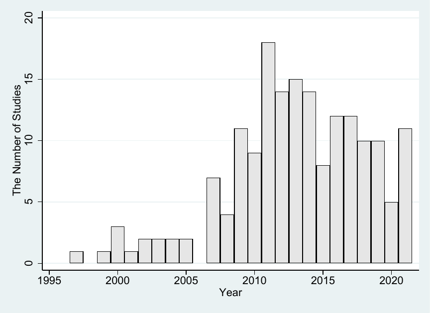
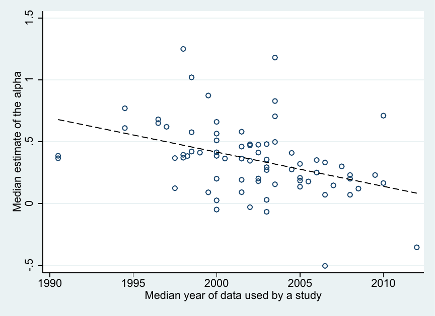
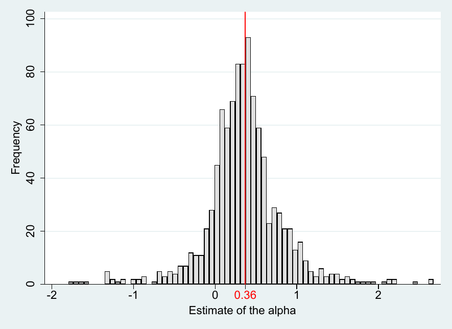
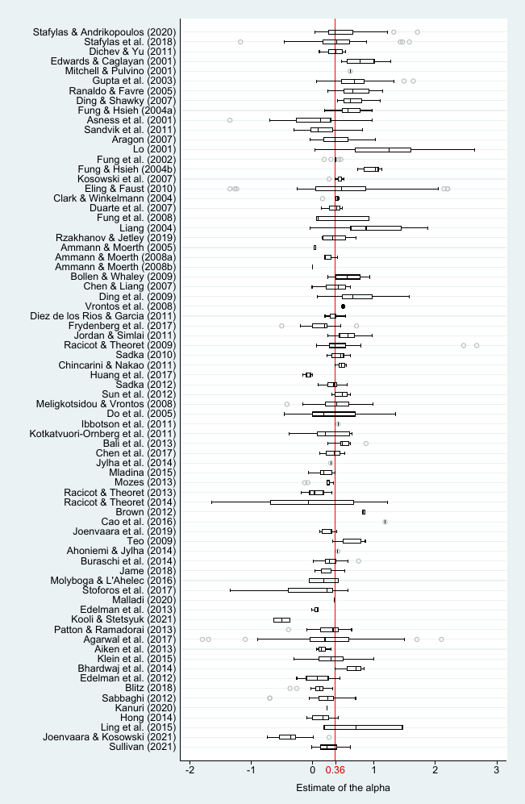
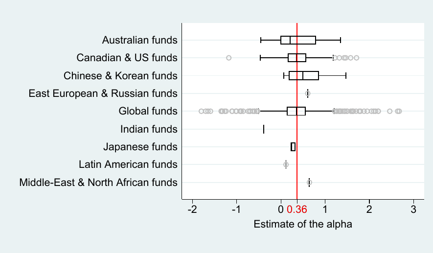
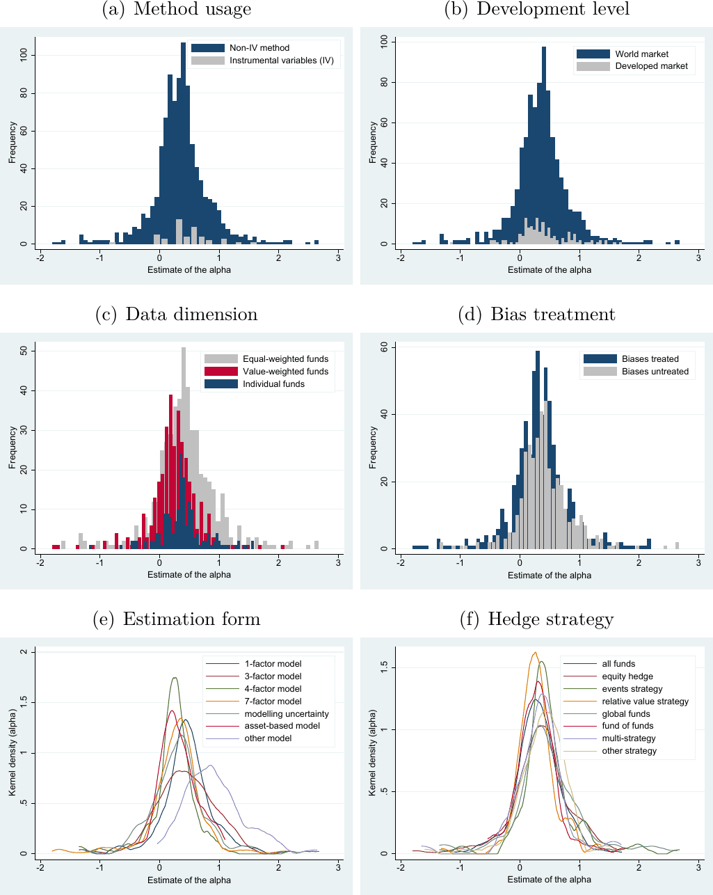
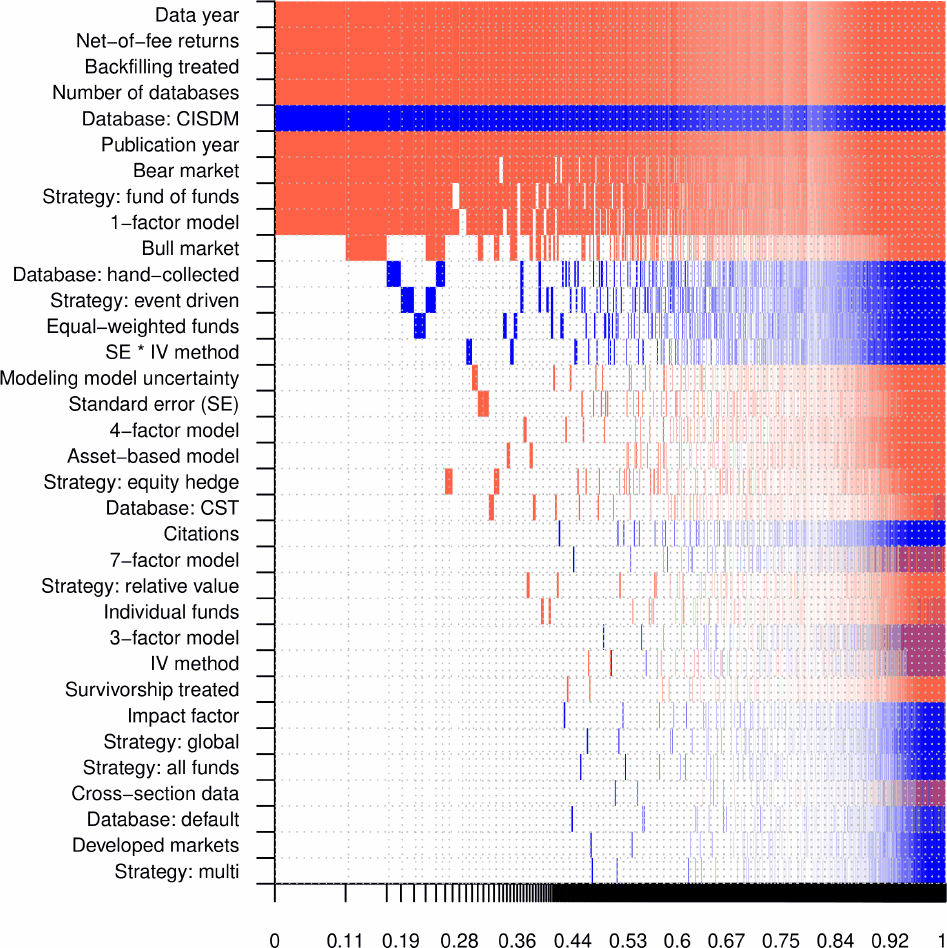
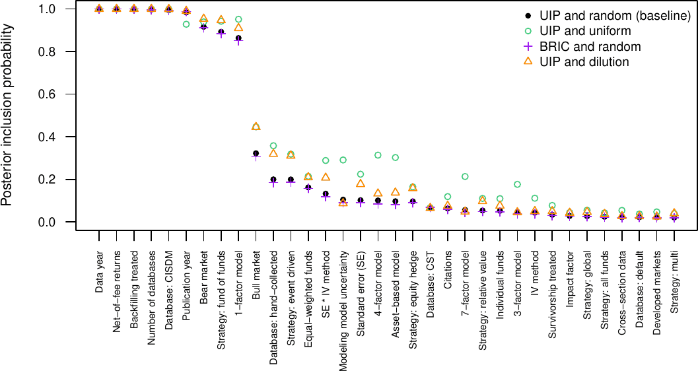
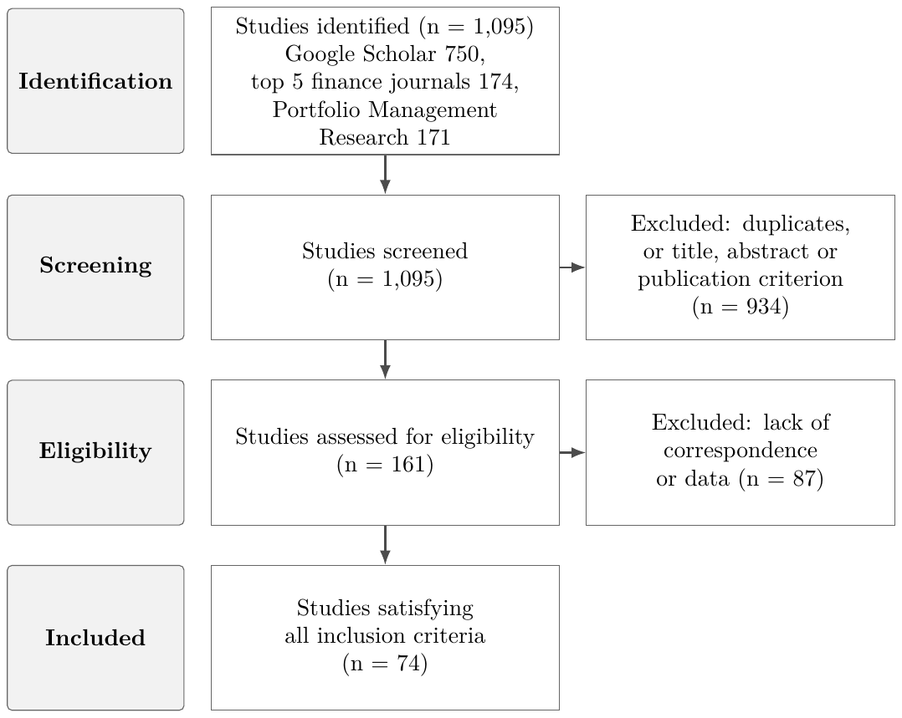
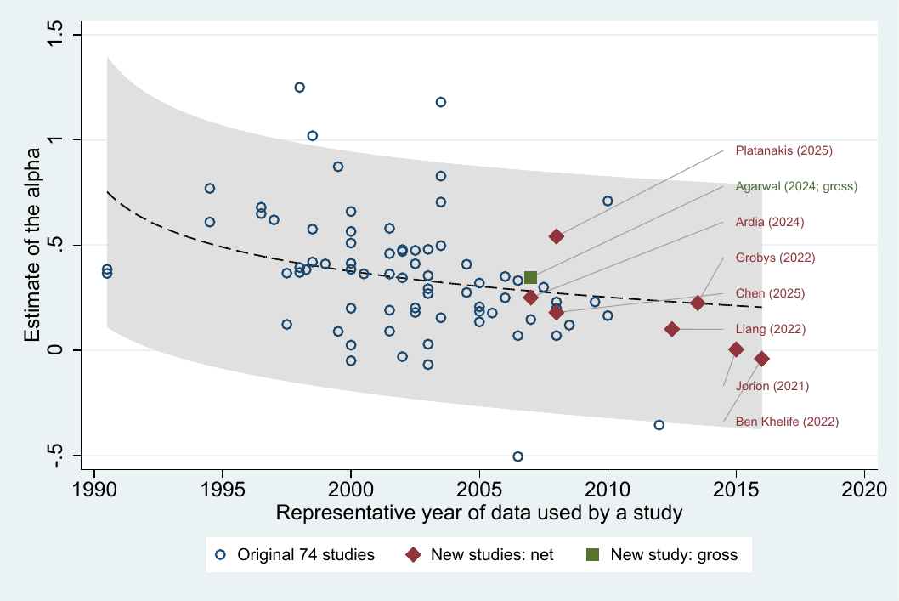

What Matters in Explaining the Variation in Hedge Fund Performance?
Fan Yang, Tomas Havranek, Zuzana Irsova, and Jiri Novak (2026), "What Matters in Explaining the Variation in Hedge Fund Performance?" Charles University, Prague. Available at meta-analysis.cz/alphas.
Fan Yanga, Tomas Havranekb,d,e, Zuzana Irsovab,c,e, Jiri Novakb,*
a Prague University of Economics and Business, W. Churchill Sq. 1938/4, Prague, 130 67, Czech Republic
b Charles University, Institute of Economic Studies, Opletalova 26, Prague, 110 00, Czech Republic
c Anglo-American University in Prague, Letenska 120/5, Prague 1, 118 00, Czech Republic
d Centre for Economic Policy Research, 2 Coldbath Square, London, EC1R 5HL, United Kingdom
e Meta-Research Innovation Center at Stanford, Stanford University, Stanford, CA 94305, United States
*Corresponding author. Tel.: +420 222 112 314.
Email addresses: fan.yang@vse.cz (Fan Yang), tomas.havranek@fsv.cuni.cz (Tomas Havranek), zuzana.irsova@fsv.cuni.cz (Zuzana Irsova), jiri.novak@fsv.cuni.cz (Jiri Novak)
Abstract
We examine the ability of 34 context-related variables to explain the variation in reported estimates of hedge fund performance. Using 1,019 “alphas” collected from 74 empirical studies, we identify 9 important variables. We also quantify the difference between alphas based on gross and net-of-fee returns. Evaluated at the latest data and publication years in our sample, the best-practice alphas are negative, but their study-bootstrap confidence intervals include zero for every common hedge fund strategy. Our paper helps evaluate the robustness of prior propositions on hedge fund performance and reconcile some previous seemingly contradictory findings.
Keywords: Hedge funds, alpha, fees, meta-analysis, model uncertainty
JEL: C83, G12, G28
1. Introduction
The economic prominence of hedge funds has grown dramatically over the past few decades. Stulz (2007) and Barth et al. (2020) document that assets under management (AUM) in hedge funds have increased approximately one hundredfold since the early 1990s. This rapid growth, along with the economic impact of several high-profile hedge fund failures, has drawn considerable attention to how hedge funds operate and spurred extensive empirical research analyzing how much value they generate for investors and how their ability to generate return depends on various fund and market characteristics (Connor and Woo, 2004; Stulz, 2007). Figure 1 illustrates a steep increase in the number of research articles on hedge funds published in five leading finance journals.
Prior empirical studies differ in their data coverage, the use of performance metrics, estimation methodology, and several other fundamental characteristics. Most hedge funds take advantage of favorable regulatory requirements that do not oblige them to periodically report their performance to the regulators. Consequently, prior empirical studies are mostly based on selected commercial databases that contain data on a subset of relevant hedge funds. Furthermore, hedge funds frequently engage in complex and dynamically evolving investment strategies, which makes it challenging to adequately adjust for all risk exposures their holdings entail (Fung and Hsieh, 2001, 2004b; Fung et al., 2008). Individual empirical studies differ in how they adjust for these risk exposures. Prior studies also employ various estimation methodologies. This heterogeneity may matter for the magnitude of the reported estimates. As a result, the range of published hedge fund performance estimates is quite broad, and reconciling the findings across studies can be challenging.

Note: The figure shows the number of research articles on hedge funds published in five leading finance journals, i.e., Journal of Finance, Journal of Financial Economics, Review of Financial Studies, Review of Finance, Journal of Financial and Quantitative Analysis.
In this paper, we perform a systematic analysis of prior empirical evidence on hedge fund performance. We use intercept terms from regressions of realized returns on risk factors – commonly referred to as “alphas” – as a proxy for hedge fund performance. Alphas represent risk-adjusted returns that account for the various factor exposures of hedge fund investment strategies. They are widely used in both the academic literature and industry practice to assess the value that hedge funds generate for their investors. We base our study on 1,019 alphas that we collect from 74 empirical studies published between 2001 and 2021. The data and the code for all our results are available at https://meta-analysis.cz/alphas. We use several state-of-the-art meta-analytical techniques (for an overview, see Irsova et al., 2024) that allow us to adjust the reported estimates for potential reporting and publication biases and exploit heterogeneity in relevant investment-type, time-related, and research-design characteristics. These characteristics may be interrelated, and their correlation with the reported alphas documented in prior empirical research may be driven by similar underlying causes. We contribute to prior research by simultaneously considering the multitude of these characteristics, testing them jointly, and identifying those that are most relevant for explaining the variation in reported estimates of hedge fund performance. We also quantify the impact of these characteristics on reported alphas using a large pool of published estimates.
We document that 9 out of the 34 characteristics we analyze are consistently relevant to explain the variation in the reported estimates. Hedge fund alpha estimates tend to be lower when (i) adjusted for the backfilling bias, (ii) estimated for the fund-of-funds, (iii) estimated based on the 1-factor model, (iv) estimated for the declining “bear” markets, (v) based on more source databases, and (vi) based on data sourced from databases other than the Morningstar Center for International Securities and Derivatives Markets database (CISDM).
We also quantify an economically large effect of the management and performance fees that hedge funds charge their investors. After controlling for other factors that may affect the value generated by hedge funds, our results suggest that monthly alphas reported on a net-of-fee basis are, on average, 0.440 percentage points lower than alphas based on gross returns. Annualized, this difference exceeds 5 percentage points, although gross and net estimates mostly come from different studies. After accounting for fee treatment and research-design heterogeneity, the best-practice alpha for all strategies at the latest years in our sample is -0.079 percentage points per month, with a 95% study-bootstrap confidence interval of [-0.444, 0.372], and the corresponding intervals include zero for every strategy.
Performing a systematic analysis of prior empirical evidence is also worthwhile because estimating hedge fund performance is complicated by a number of methodological challenges that may have an impact on the reported results. Published estimates may be distorted by the survivorship and backfilling biases (Fung and Hsieh, 2000, 2002, 2004b; Fung et al., 2008). More generally, meta-regression evidence shows that publication selection can distort reported empirical results (Nguyen et al., 2021). The backfilling bias arises when hedge funds are included in databases together with their performance history only after succeeding during an “incubation period” intended to accumulate a performance track record before offering the fund to investors. Backfilling performance histories of successful funds introduces a positive bias into the database since the performance of the funds that did poorly in the incubation period is never recorded in the database (Fung and Hsieh, 2000; Posthuma and Van der Sluis, 2003). Jorion and Schwarz (2019) develop a correction method for this bias and argue that ignoring the bias may artificially inflate the estimated abnormal returns by as much as 4% per annum.
The survivorship bias may arise when commercial databases terminate coverage of previously included funds. Providers may wish to purge the database of funds that ceased operation because they are no longer relevant to their clients (Edelman et al., 2013; Getmansky et al., 2015). Hodder et al. (2014) report that on average 15% of hedge funds exit the database every year. A bias arises when the funds that exit the database on average underperform the “surviving” funds. Prior studies differ in the way they address these biases, which may affect the performance estimates they report.
Fung and Hsieh (2000), Fung and Hsieh (2002), and Fung et al. (2008) argue that the impact of the backfilling and survivorship biases may be mitigated by using data on the funds of hedge funds (FoFs) because hedge funds included in FoFs must be, by definition, investable at any given time. Thus, FoFs’ returns should adequately reflect even returns of funds that choose not to report their performance to commercial databases and those that cease to exist at some point in time (Posthuma and Van der Sluis, 2003). However, while these are valid arguments, using FoFs’ returns generates new problems. FoFs endogenously decide what hedge funds to include in their holdings, which implies that the funds they hold may not be representative of the entire hedge fund population. Furthermore, FoFs charge investors an additional layer of management and performance fees (Stulz, 2007) that reduce the realized return, which may distort the quantification of the abnormal return generated by individual hedge funds (Amin and Kat, 2003a). Brown et al. (2005) find that due to the extra layer of fees, individual funds actually dominate FoFs in terms of net-of-fee returns, which makes FoFs unattractive to investors. Getmansky et al. (2015) observe a decline in the number of FoFs over time, which the authors ascribe to their fee structure, competition from multi-strategy funds, and their limited ability to protect investors from losses during financial downturns. Due to these considerations, it is questionable how good a proxy of individual hedge funds’ performance FoFs actually are.
In this paper, we offer an alternative approach to quantifying the impact of these biases by exploiting the heterogeneity across published estimates. Our meta-analysis methodology allows us to simultaneously consider both the alphas estimated for FoFs and other methods of adjusting for these biases to observe their impact on the empirical results. Consistent with the proposition that these biases are consequential, our results show that reported alpha estimates tend to be significantly lower when the primary study’s research design uses conventional approaches of adjusting for the backfilling bias. Furthermore, we also observe lower alpha estimates for FoFs. Both findings support the notion that backfilling historical returns has a substantial impact on the reported results, and that various empirical strategies for adjusting for these biases significantly affect the findings and their interpretation. Consequently, empirical evidence from studies that do not adjust for these biases should be interpreted with caution.
Furthermore, one of the major challenges in measuring hedge fund performance is the choice of the appropriate risk model. Hedge funds frequently engage in complex and dynamically evolving investment strategies. Thus, they may exhibit exposures to fundamental risk factors that differ from those that are typical for more conventional asset classes, such as common equities and fixed-income securities. Hence, accurately measuring the abnormal returns they generate is not trivial (Bali et al., 2013). Relatedly, Malakhov et al. (2024) show that a portion of apparent hedge fund alpha can reflect exposure to the low-beta anomaly, underscoring the importance of the risk-adjustment model. Fung and Hsieh (2001, 2004b); Fung et al. (2008) propose a risk model that is specifically designed to capture risk exposures relevant to hedge funds. Given that this model was explicitly designed for hedge funds, it is plausible to expect it to most accurately capture the risk factors relevant to investment strategies commonly used by hedge funds. Nevertheless, the specificity of this model for hedge fund research also implies that results based on it are not directly comparable to performance estimates of other investment forms, such as mutual funds. Thus, prior hedge fund research frequently reports alpha estimates based on several other asset pricing models, such as the Capital Asset Pricing Model (CAPM) (Sharpe, 1966; Lintner, 1965; Mossin, 1966; Black, 1972), the three-factor model (Fama and French, 1993, 1996), and the four-factor model (Carhart, 1997). Our results show that the choice of the risk model matters for estimating how much value hedge funds actually create.
Our results also show that the estimates of the value created by hedge funds depend on the market conditions. Hedge funds sometimes aspire to be “market neutral”, i.e., to generate fairly stable returns regardless of the general stock market conditions. Market neutrality should be valued by investors because robust returns during market downturns help investors diversify away risks. Nevertheless, empirical research does not provide strong support for hedge funds’ market neutrality (Capocci et al., 2005; Patton, 2009). We document that hedge fund alphas tend to be lower when estimated for the declining “bear” markets, but this evidence comes from only four primary studies.
Measurement of hedge fund performance is further complicated by data limitations. The light regulatory framework does not oblige many hedge funds to report their performance to the regulators. Many prior studies thus rely on data from selected commercial databases that hedge funds choose to report at their discretion. If funds decide to report performance strategically, this sample may not be representative of the general population (Agarwal et al., 2013; Fung and Hsieh, 2000; Jorion and Schwarz, 2014). Prior research suggests that using such samples may lead to biased inferences (Aiken et al., 2013; Edelman et al., 2013). In this paper, we systematically analyze how the reported estimates of hedge fund performance vary with researchers’ choices of source databases. We observe that reported hedge fund alpha coefficients tend to be lower when more databases are used as data sources in a given primary study, and when the CISDM is not used as one of the data sources. The association with the number of databases, however, comes from studies that combine CISDM with other sources. Without the CISDM estimates, the coefficient is no longer negative (Section 4.2). Researchers should also be aware that alpha estimates derived from the CISDM database are often higher than those from other databases.
We also use the large sample of performance estimates to quantify the impact of the management and performance fees. It is well-recognized that hedge funds charge their investors substantial fees. Ben-David et al. (2020) estimate that, on average, hedge funds appropriate in fees almost two-thirds of the excess return they generate. Prior literature also suggests that in alternative investments and private markets these fees are difficult to quantify due to their conditional nature (Agarwal et al., 2009b; Goetzmann et al., 2003; Lim et al., 2016). We offer an alternative way of estimating the effect of these fees by exploiting the composition of our sample that includes both alphas estimated using gross returns and alphas estimated net of fees. Our indicator variable captures the effective impact of hedge fund fees after controlling for the other characteristics that affect the magnitude of reported alpha estimates.
In addition, we observe a strong downward trend in the reported alphas over time. We visualize the trend in Figure 2. The figure shows the median hedge fund alpha reported in each of the 74 studies in our main sample against the median year of the data used in that study. The unconditional sample mean of all alpha estimates is equal to 36 basis points (i.e., 0.36%) on a monthly basis, which corresponds to the annual abnormal return of 4.32%. The positive mean alpha that we observe is broadly consistent with values reported in prominent prior studies on hedge fund performance (Fung and Hsieh, 2001; Getmansky et al., 2015). The downward-sloping fitted linear trend in Figure 2 indicates that studies using later data periods tend to report lower median alphas.

Note: Each point represents one of the 74 primary studies, plotted at its median alpha and median representative data year. Alpha is expressed in monthly percentage points. The dashed line is the fitted linear trend against calendar year, estimated using one observation per study.
Our main sample covers articles published through September 1, 2021, and the median study is published nine years after the midpoint of its data. For a descriptive comparison, in September and October 2026 we collected alpha estimates from journal articles published after this date that report an alpha for all hedge funds, an industry index, or strategy portfolios. The selection is illustrative and does not come from a systematic search. Table A3b lists the candidate studies we screened, and Table A3 reports the eight included estimates and their sources. We give preference to overall portfolios and the Fung–Hsieh seven-factor model. When these are unavailable, we use the main portfolio or the median of portfolio alphas and the available factor model. We use only estimates reported with a standard error or a t-statistic (for a median, each underlying portfolio alpha must have one).
Figure A2 in the Appendix compares the original 74 studies with the eight new estimates, one point per study. The new estimates range from -0.040 to 0.541 percentage points per month. Their return-data periods end between 2017 and 2021, with midpoint years between 2007 and 2016. Six of the seven net-of-fee estimates lie below or very close to the trend fitted to the original studies; the estimate from Platanakis et al. (2025) lies above it. The gross-return estimate from Agarwal et al. (2024), shown with a separate marker, also lies above the line. All eight lie within the pointwise 95% prediction band of the logarithmic curve fitted to the original study medians. Four of the eight studies have data midpoints after 2012, the latest median year among the original studies. For these studies the curve is an extrapolation, so the comparison cannot confirm the time trend.
In our subsequent multivariate analysis, using the main sample of 74 studies, the negative association with the data year persists after controlling for the observed research-design characteristics (see Table 3). The observational meta-analytic design does not, however, identify the cause of the residual time pattern: changing economic conditions, evolving reporting practices, database and fund-universe composition, and unmeasured methodological changes remain possible explanations.
Several prior empirical studies investigate how hedge fund performance changes over time (Ammann and Moerth, 2005; Bali et al., 2013; Bollen et al., 2021; Edelman et al., 2012; Fung et al., 2008; Gao et al., 2022; Getmansky et al., 2015; Jagannathan et al., 2010; Kauppila, 2022; Kosowski et al., 2007; Mozes and Steffens, 2016; Sullivan, 2021). These studies consider several potential explanations for the observed changes in hedge fund performance, including decreasing returns to scale that make it progressively more difficult for hedge funds to generate abnormal returns when they manage larger amounts of capital (Berk and Green, 2004; Fung et al., 2008), liquidity and growing hedge fund sizes (Ding et al., 2009; Fung et al., 2002; Mozes and Steffens, 2016), central bank interventions in financial markets following the 2008 financial crisis that made the implementation of some hedge fund strategies more challenging (Barth and Kahn, 2021; Bollen et al., 2021), higher compliance costs and greater regulatory oversight of hedge funds (Bollen et al., 2021; Cumming et al., 2020; Restrepo, 2024), and more efficient handling of potential biases in research databases (Bollen et al., 2021; Fung and Hsieh, 2000; Kauppila, 2022; Posthuma and Van der Sluis, 2003). Some proposed explanations concern observable methodological choices, such as risk adjustment and the treatment of database biases, whereas others cannot be identified with our data. We therefore examine how reported alphas vary with the recorded methodological and data-treatment characteristics across studies.
We make several important contributions to the prior research literature. First, using the same dataset of 1,019 hedge fund alpha estimates from 74 studies, Yang et al. (2024) examine publication bias in the empirical literature on hedge fund performance and conclude that hedge fund alpha estimates are not significantly affected by selective reporting of empirical results. In the present paper, we take the adjustment for this (limited) publication selection bias as our point of departure and investigate which factors explain the variation in reported hedge fund alphas. We use Bayesian model averaging across 34 study characteristics to account for this variation and to assess the associations with time and fees. In addition, we compute best-practice estimates for the individual hedge fund strategies, evaluated at the latest time values represented in the sample. The bias-corrected mean alpha of Yang et al. (2024) is positive. Our best-practice estimates are lower because they also account for research-design choices and are evaluated at the latest years in our sample, where the downward trend in reported alphas lowers the estimate.
Second, we document a systematic negative association between reported hedge fund performance and time that remains after controlling for observed reporting biases, hedge fund characteristics, and research-design choices. We estimate one common time slope for all hedge fund categories.
Third, we also contribute to the prior research literature by introducing an alternative approach to estimating the impact of the management and performance fees that hedge funds charge for the value they generate for their investors. These fees tend to be difficult to quantify because their magnitude may depend on a fairly complex set of conditions agreed upon by the investors. Our methodological approach allows us to measure the effective impact these fees have on the realized hedge fund performance and quantify how they affect the value hedge funds generate for their investors.
Fourth, we identify several research design choices in the primary studies and other conditions that are associated with reported hedge fund alphas. In particular, we show that the estimated alpha coefficients depend on the choice of the asset pricing model. They also depend on the general market conditions during which hedge fund performance is measured. We also show that the reported hedge fund performance estimates are sensitive to the choice of data sources. The reported coefficients tend to be lower when more databases are used as data sources and are, on average, higher when the CISDM database is used as one of the sources. These findings help researchers and practitioners interpret prior empirical findings and inform them about the likely impact of their methodology and sample choices in future research.
2. Literature
In the Online Appendix, we discuss the institutional background concerning hedge funds. We conclude that a priori, it is not clear whether hedge funds should be expected to outperform other investment forms. On the one hand, hedge funds may take advantage of favorable regulatory requirements and remain relatively secretive, which allows them to implement innovative investment strategies and take risks that would otherwise be untenable. They may also identify assets that are likely to appreciate in value and trade on fundamental information, thereby generating abnormal returns (Connor and Woo, 2004; Stulz, 2007; Brown et al., 2018; Li et al., 2022). On the other hand, their limited transparency may complicate monitoring by investors, limit managerial accountability, and the substantial management and performance fees may consume much of the return they generate (Ben-David et al., 2020). Their risky positions may make them vulnerable to liquidity squeezes (Stulz, 2007). This controversy motivated extensive prior empirical research on hedge fund performance and their role in financial markets. Figure 1 demonstrates the increased interest in examining hedge fund performance over the past two decades. This extensive empirical research produced a wide range of estimates of the value hedge funds generate for their investors. Some of the variation in the published estimates likely arises due to the use of different data samples, time periods, methodological approaches, or the differential impact of biases that may affect various estimates.
A commonly voiced concern related to the measurement of hedge fund performance concerns the deviations from normality in the distribution of hedge fund returns (Malkiel and Saha, 2005). Several studies explicitly address this issue. Agarwal and Naik (2004) document a significant left-tail risk in a wide range of hedge fund strategies. To account for this left-tail risk, they develop a conditional value-at-risk framework, which shows that the conventional mean-variance measures may underestimate expected left-tail losses by more than half. Amin and Kat (2003a) use an approach that does not require specific characteristics of the underlying returns distribution, and they conclude that the vast majority of individual funds and indices are inefficient relative to the general market index. Also Bali et al. (2013) use an approach that accommodates the non-normality in returns distribution. Out of eleven hedge fund indices they consider, they find outperformance only for two of them – the long-short equity and emerging markets hedge fund indices. In a similar vein, Agarwal et al. (2009a) document that hedge funds are exposed to the risks associated with the higher moments of their returns distribution and that adjusting for this exposure substantially reduces the observed abnormal performance, especially for equity-based hedge fund strategies.
Another research stream investigates the dependence of hedge fund performance on macroeconomic conditions. Bali et al. (2011) report that hedge funds with higher exposure to default risk premium and lower exposure to inflation earn higher returns. Avramov et al. (2013) consider four variables related to the macroeconomic conditions: the default spread, the dividend yield, the volatility index (VIX), and the aggregate fund flows into hedge funds, and they show that they predict future hedge fund returns. Similarly, Agarwal et al. (2017) measure hedge funds’ exposure to uncertainty about aggregate volatility, and they show that funds with low exposure to this uncertainty outperform those with high exposure. Building on these findings that underscore the relevance of macroeconomic conditions for hedge fund performance, Bali et al. (2014) include measures of macroeconomic uncertainty directly in the risk model used to measure hedge fund performance, and they demonstrate the relevance of most of the macroeconomic factors in this setting. Dragomirescu-Gaina et al. (2021) further show that uncertainty shapes hedge fund managers’ speed–accuracy trade-off, which can improve timing in turbulent markets but weaken profitability in calmer periods.
Related to the macroeconomic conditions, other papers also examine how hedge fund performance depends on conditions in financial markets. Hedge funds sometimes aspire to be “market neutral”, i.e., generate fairly stable returns regardless of the general market conditions. Nevertheless, prior empirical research does not provide strong support for hedge funds’ market neutrality. Capocci et al. (2005) examine hedge fund performance in bull and bear markets, and they conclude that hedge fund outperformance is concentrated in periods of rising markets. Patton (2009) considers five different ways of measuring market neutrality, and he concludes that hedge fund returns tend to be positively correlated with market returns. The author also finds that about one-quarter of funds classified in the market-neutral style exhibit substantial exposure to market risk. Consistent with this evidence, Noori and Hitaj (2023) show that hedge fund strategies remain dynamically connected to broader financial market conditions.
Another reason for the diversity in the reported results may be the data deficiencies that may arise due to the voluntary nature of the reporting of hedge fund performance in hedge fund databases that may bias the data samples available to researchers. A self-selection bias arises when successful hedge funds are more likely to report their performance to commercial databases. However, it is not obvious that better-performing funds are always more inclined to report their performance to commercial databases. Some very successful hedge funds may avoid reporting to databases to prevent disclosing clues about their proprietary trading strategies. Furthermore, well-performing hedge funds may reach their capacity limits and they may not seek any additional capital inflows. Such hedge funds may stop reporting performance to databases because they no longer have incentives to advertise themselves among investors (Ackermann et al., 1999). Jorion and Schwarz (2014) indeed find that investment companies act strategically and they list in multiple commercial databases their small, best-performing funds, which helps them raise awareness about the funds and attract new investments (Fung and Hsieh, 1997, 2000).
Agarwal et al. (2013) examine the impact of self-selection bias by comparing data in five commercial databases with information in Form 13F, which advisors (rather than funds) report quarterly to the Securities and Exchange Commission (SEC). They find that even though reporting initiation is more likely after a superior performance, it subsequently declines. They conclude that the differences in performance between the reporting and non-reporting funds are small. Similarly, Edelman et al. (2013) combine previously unexplored data sources with manual data collection to construct a comprehensive dataset of returns earned by large hedge fund management companies. Based on the sample covering more than half of the industry’s AUM they observe little difference between the reporting and non-reporting firms. In contrast, Aiken et al. (2013) use the mandatory regulatory filings by registered funds that are obliged to report their holdings in individual hedge funds. They observe that only about one-half of these fund-level returns are reported to one of the five major hedge fund databases. Comparing the two subsamples they observe that non-database funds significantly underperform funds that report their performance to one of the databases. The result seems to be driven by the left tail of the returns distribution, that is, by funds in decline that quit reporting to databases before their performance further deteriorates.
The backfilling bias or the “instant-history bias” arises when hedge funds are included in databases together with their performance history only after succeeding during an “incubation period” intended to accumulate a performance track record before offering the fund to investors. Recording performance histories of only the successful funds introduces a positive bias into the database (Fung and Hsieh, 2000; Posthuma and Van der Sluis, 2003). To quantify its effect prior research compares returns generated in the first years of hedge fund existence in the database with other years. Estimates based on this approach range between 1.0% and 1.5% per annum (Fung and Hsieh, 2000; Edwards and Caglayan, 2001). Posthuma and Van der Sluis (2003) access additional information on the length of the incubation period in the TASS database and they find the bias to be more prevalent and significant. They observe that a typical incubation period lasts for about 3 years. They also find that more than half of the recorded returns are backfilled, which results in a bias of about 4% per annum.
To mitigate the effect, prior research sometimes eliminates the first year of data that are most likely to be affected by the backfilling bias (Kosowski et al., 2007; Teo, 2009; Avramov et al., 2011). Nevertheless, Fung and Hsieh (2009) argue that this approach is problematic. The length of the incubation period may differ greatly and the information on funds’ inception dates may be unreliable or missing in the databases. Some hedge funds may also enter the sample due to database mergers. Hence, removing the first year of observations is a rather blunt instrument that also results in a substantial loss of data and impairs the power and generalizability of empirical tests. Similarly, Jorion and Schwarz (2019) suggest that truncating early returns does not resolve the backfilling bias and it can lead to misleading conclusions. They recommend removing returns prior to the listing date and they propose an approach of inferring these dates when they are missing in the database.
The survivorship bias may arise when commercial databases terminate coverage of previously included funds. Providers may wish to purge the database of funds that no longer operate because they are not relevant to their clients anymore. Hodder et al. (2014) report that on average 15% of hedge funds exit the database every year. A bias arises when the funds that exit the database on average underperform the “surviving” funds. Edelman et al. (2013) and Getmansky et al. (2015) argue that two types of hedge funds are likely to stop reporting their performance to databases: those that are no longer attractive to investors and those that do not seek to attract new investors anymore. Funds that approach liquidation after having incurred substantial losses and experiencing an outflow of funds by investors lack the incentive to continue reporting their performance because they are no longer attractive to investors. On the other hand, well-performing funds that approach their capacity limit and no longer seek additional capital inflows also have incentives to quit reporting their performance to databases. Hence, the impact of survivorship bias in the context of hedge funds is not a priori obvious.
Prior research points toward regularities in eliminating hedge funds from databases. Fung and Hsieh (2000) observe that 60% of defunct funds are liquidated whereas 28% are removed from the database because the managers stopped reporting return information. To estimate the performance of successful funds that may exit the database due to capacity constraints, Edelman et al. (2013) compare performance of large non-reporting funds identified through an industry survey with funds of comparable size that do report their performance to one of the commercial databases. They observe fairly similar performance for both groups. These findings suggest that databases likely overstate true hedge fund performance. Brown et al. (1999) examine survivorship bias in a database of active and defunct offshore funds and observe positive risk-adjusted returns even after adjusting for the bias. Liang (2000) observes that poor performance is the main reason for a fund’s disappearance from the databases and finds that the survivorship bias exceeds 2% per annum and it varies with investment styles. Edwards and Caglayan (2001) compare the performance of defunct funds with those that are still in operation and they estimate the impact of the bias at 1.85% per annum. Similarly, Amin and Kat (2003b) estimate the impact of the survivorship bias to be around 2.0% per annum on average, but substantially higher for small, young, and leveraged funds (between 4.0% and 5.0%). Fung and Hsieh (2006) estimate the impact of the survivorship bias at 1.8% and 2.4% per annum. In comparison, Agarwal et al. (2015) propose a range between 2.0% and 3.6% per annum. They also state that the bias varies across databases, sample periods, and fund characteristics.
The survivorship bias may be expected to decrease over time as databases improve the consistency of their coverage and retain historical data. However, even databases that retain the data for defunct funds may be contaminated by the delisting bias or liquidation bias. Aiken et al. (2013) find that about half of the hedge funds continue to operate two years after the delisting date and their returns are 1.8% lower than returns of funds that continue reporting their performance to the database. Edelman et al. (2013) argue that the reliability and consistency of performance data provided by hedge funds approaching liquidation often deteriorates, which may prompt data vendors not to record them due to questionable reliability. This implies that even databases that include records for the “dead” funds may miss some of the last performance data that tend to be rather poor. Hodder et al. (2014) use estimated portfolio holdings for funds-of-funds and they estimate the average delisting return for all hedge funds of –1.61%. They also find that the negative delisting return is substantially larger for funds with poor prior performance and with no clearly stated delisting reason. Other studies estimate the impact of missing delisting returns on estimates of average hedge fund performance. Edelman et al. (2013) estimate the magnitude of the delisting bias at a modest 0.02% per annum. Jorion and Schwarz (2013) exploit the differences in the timing of hedge fund delisting from various databases and estimate the impact of the bias to be at least 0.35% per annum. They suggest that hedge fund indices should be adjusted downward by 0.5% per annum to adjust for the effect.
Given the heterogeneity in the above estimates, we consider it worthwhile to aggregate and synthesize extensive prior empirical research findings, adjust them for potential publication selection bias, and perform a multivariate analysis that jointly considers numerous explanatory variables that may explain the variation in the reported hedge fund performance estimates.
3. Data
Hedge fund performance is commonly measured by the intercept terms (the “alphas”) from regressions of hedge fund returns on risk factors, see Equation 1.
where denotes the realized return on portfolio , denotes the risk-free rate of return, represents the intercept term, represents the -th risk factor, denotes the sensitivity of portfolio to the -th risk factor, and represents the error term. The factor models adjust portfolio returns for exposure to systematic risk. The alphas that represent the unexplained portion of the realized return may thus be interpreted as the “abnormal” returns that hedge funds earn for their investors.
Various factor models differ in the set of factors they consider. Thus, the alpha estimates obtained based on the different models may also vary. The simplest approach based on the Capital Asset Pricing Model (CAPM) (Sharpe, 1966; Lintner, 1965; Mossin, 1966; Black, 1972) uses the difference between the stock market return and the risk-free rate as the only risk factor. Notwithstanding the conceptual appeal this approach has, since it models the expected excess return based on an asset’s contribution to the overall portfolio risk, which should correctly reflect the relevant risk exposure of well-diversified investors, prior research establishes that the single risk dimension might be too restrictive in capturing all the relevant risk exposures. Thus, the three-factor model (Fama and French, 1993, 1996) and the four-factor model (Carhart, 1997) are frequently proposed as more comprehensive alternative approaches to capturing the systematic risk. Furthermore, due to the complexity of measuring a risk exposure in hedge funds that frequently engage in complex and dynamically evolving investment strategies, Fung and Hsieh (2004b) propose a model featuring seven factors that are particularly relevant for risk exposures that common hedge fund strategies involve. These seven dimensions involve (i) the stock market excess return, (ii) the spread between the small-capitalization and large-capitalization stock returns, (iii) the excess return pairs of look-back call and put options on currency futures, (iv) on commodity futures, and (v) on bond futures, (vi) the duration-adjusted change in the yield spread of the U.S. 10-year Treasury bond over the 3-month T-bill, and (vii) the duration-adjusted change in the credit spread of Moody’s BAA bond over the 10-year Treasury bond.
Beyond choosing among these common risk factor models, some primary studies use additional measures that capture additional sources of risk, such as liquidity-related characteristics, volatility, or uncertainty measures. Since these extensions are less common and less standardized across individual studies than the canonical factor models, in our meta-analysis, we do not code these specifications into separate risk-adjustment categories. Instead, we group them according to the broader characteristics of the regression models used in the primary studies. Wherever applicable, these additional features of regression specifications may be reflected in other indicator variables that we use to characterize more general estimation characteristics.
We collect our sample of hedge fund alphas from peer-reviewed research articles published between January 1, 2001, and September 1, 2021. The alpha estimates are the intercept terms from regressions of hedge fund returns on risk factors. The alphas represent risk-adjusted returns generated by hedge funds, which makes them comparable and suitable for aggregation by means of a meta-analysis. We use monthly alphas, expressed as a percentage, as our key variable of interest. For example, an alpha of 0.36 refers to a monthly alpha of 0.36%, which corresponds to an annual abnormal return of 4.32%. The slope coefficients of the indicator variables in our regressions can thus be interpreted as percentage-point differences in monthly alphas. When a primary study reports annual or quarterly alphas, we convert them to a monthly frequency by dividing them by twelve or three, respectively.
We deliberately limit the pool of primary studies to research articles published in academic journals. Published articles have cleared the peer-review process of their respective journals, and alpha estimates reported in them are likely more credible than those in working papers and more influential in shaping the views of finance researchers and practitioners. Working papers and grey literature are therefore not included, and our findings, including the publication-selection adjustment, are conditional on this published evidence base. Testing this restriction would require a separate search and coding of working papers, matched to their published versions to avoid counting the same estimates twice.
Our procedure of identifying primary studies, from which we source the alpha estimates, follows the guidelines proposed by Havranek et al. (2020). We outline the procedure in Figure A1. First, we consider studies cited in two prominent reviews of empirical research on hedge fund performance: Connor and Woo (2004) and Agarwal et al. (2015). We then perform a systematic Google Scholar search using the query (“hedge fund”) AND (“returns” OR “performance”). To ensure that our search has a good coverage of relevant articles we verify that the used combination of keywords identifies the vast majority of studies cited in the two above-mentioned review articles. We go through the first 750 articles in the Google Scholar list and we manually collect hedge fund alpha estimates reported in them. We terminate our screening of primary studies after having covered the first 750 articles from the Google Scholar list because we observe that after this point, the relevance of articles substantially decreases and the likelihood of finding additional usable alpha estimates is rather small in articles further down in the list. The search was completed in December 2021 and covered articles published through September 1, 2021. We did not archive the Google Scholar result list. Rankings change over time and across users, so the same query may return a different ordering today.
We further complement our main keyword search with another search that is more general in the combination of used keywords: (“hedge”) AND (“fund” OR “funds”), and that is limited to five journals where empirical research on hedge fund performance is likely to be published: the Journal of Finance, the Journal of Financial Economics, the Review of Financial Studies, the Journal of Financial and Quantitative Analysis, and the Review of Finance. Finally, to ensure comprehensive coverage of estimates published in journals aimed primarily at investment professionals, we perform a third search using this query in the journals listed on the Portfolio Management Research website1: the Journal of Portfolio Management, the Journal of Financial Data Science, the Journal of Impact and ESG Investing, and the Journal of Fixed Income.
In our multivariate analysis, we build on Yang et al. (2024), who investigate the impact of the publication selection bias in hedge fund research, and we control for selectivity in reporting alpha coefficients. This requires a measure of the precision of collected alpha estimates. Consequently, we only collect alpha estimates accompanied by a measure of statistical significance, i.e., a t-statistic, a standard error (SE), and/or a p-value. When more than one measure of statistical significance is provided, we apply the following procedure. We collect corresponding t-statistics directly from the primary studies whenever available. When standard errors are reported, we compute the t-statistic by dividing the alpha by its standard error. Correspondingly, in Bayesian studies, we approximate the t-statistic by dividing the alpha by its standard deviation. When a primary study reports p-values, we check if the paper discusses whether these are based on one-tailed or two-tailed tests. When the information on the type of the test is not explicitly stated, we try to infer it from the discussion of the statistical significance of reported results. We assume a two-tailed test whenever the type of the test cannot be ascertained from the discussion of statistical significance (one study). We manually verify that all the coefficients with the implied t-statistic greater than 10 are referred to as highly significant in the text of primary studies. We discard one observation with a reported t-statistic greater than 50.
Table 1 provides a list of 74 primary studies identified by our data collection procedure. From these research articles we collected 1,019 alpha estimates that constitute the sample for our empirical analysis. To limit the influence of outliers, we winsorize the alpha estimates and their standard errors at the 1st and 99th percentiles. The data set, with all coded variables for each estimate, can be downloaded from https://meta-analysis.cz/alphas. The number of data points makes our study one of the largest meta-analyses in finance. The substantial number of primary studies on this topic and the number of reported alpha coefficients imply that hedge fund performance has been extensively studied in prior research and the alpha coefficients have been estimated in a variety of ways with the use of various data samples. It thus seems worthwhile to aggregate the results from diverse studies by means of a meta-analysis.
| Agarwal et al. (2017) | Edelman et al. (2013) | Malladi (2020) |
|---|---|---|
| Ahoniemi and Jylha (2014) | Edwards and Caglayan (2001) | Meligkotsidou and Vrontos (2008) |
| Aiken et al. (2013) | Eling and Faust (2010) | Mitchell and Pulvino (2001) |
| Ammann and Moerth (2005) | Frydenberg et al. (2017) | Mladina (2015) |
| Ammann and Moerth (2008a) | Fung and Hsieh (2004b) | Molyboga and L'Ahelec (2016) |
| Ammann and Moerth (2008b) | Fung and Hsieh (2004a) | Mozes (2013) |
| Aragon (2007) | Fung et al. (2002) | Patton and Ramadorai (2013) |
| Asness et al. (2001) | Fung et al. (2008) | Racicot and Theoret (2009) |
| Bali et al. (2013) | Gupta et al. (2003) | Racicot and Theoret (2013) |
| Bhardwaj et al. (2014) | Hong (2014) | Racicot and Theoret (2014) |
| Blitz (2018) | Huang et al. (2017) | Ranaldo and Favre (2005) |
| Bollen and Whaley (2009) | Ibbotson et al. (2011) | Diez De Los Rios and Garcia (2011) |
| Brown (2012) | Jame (2018) | Rzakhanov and Jetley (2019) |
| Buraschi et al. (2014) | Joenvaara and Kosowski (2021) | Sabbaghi (2012) |
| Cao et al. (2016) | Joenvaara et al. (2019) | Sadka (2010) |
| Chen and Liang (2007) | Jordan and Simlai (2011) | Sadka (2012) |
| Chen et al. (2017) | Jylha et al. (2014) | Sandvik et al. (2011) |
| Chincarini and Nakao (2011) | Kanuri (2020) | Stafylas et al. (2018) |
| Clark and Winkelmann (2004) | Klein et al. (2015) | Stafylas and Andrikopoulos (2020) |
| Dichev and Yu (2011) | Kooli and Stetsyuk (2021) | Stoforos et al. (2017) |
| Ding and Shawky (2007) | Kosowski et al. (2007) | Sullivan (2021) |
| Ding et al. (2009) | Kotkatvuori-Ornberg et al. (2011) | Sun et al. (2012) |
| Do et al. (2005) | Liang (2004) | Teo (2009) |
| Duarte et al. (2007) | Ling et al. (2015) | Vrontos et al. (2008) |
| Edelman et al. (2012) | Lo (2001) |
Notes: The table shows the list of 74 primary studies, from which we collect the alpha estimates that constitute our sample.
Figure 3 shows a histogram of the alpha estimates that constitute our sample. Consistent with the expectations, the distribution approaches normality. It is fairly symmetric, smooth, and free of apparent discontinuities, which indicates that our data sample exhibits the expected characteristics. The vertical red line in Figure 3 denotes the unconditional sample mean of monthly alphas expressed as a percentage. The value of 0.36% corresponds to an annual risk-adjusted return of 4.32%. This number falls within the range of alpha estimates reported in several prominent prior studies on hedge fund performance. For example, the alpha estimates based on the Fung and Hsieh (2001) seven-factor model reported by Getmansky et al. (2015) range from 0.18% to 0.56%. This increases confidence that our sample is not biased and is representative of the population of alpha estimates reported in prior literature.

Notes: The figure depicts a histogram of our sample of 1,019 alpha estimates that we collect from 74 primary studies on hedge fund performance. The vertical red line denotes the sample mean.
At the same time, Figure 3 reveals a substantial variance in the reported alpha coefficients. This suggests that even though the mean value of alpha estimates that we collect from the primary studies falls within the commonly proposed range, the individual reported estimates are quite heterogeneous. Many estimates reported in prior studies substantially deviate from these common values. This suggests that it is worthwhile to aggregate these estimates in a meta-analysis and investigate how the values vary with different hedge fund characteristics and research design choices of individual studies. We perform such an analysis in this paper.
In Figure 4, we first examine how the range of reported alpha coefficients varies across the individual primary studies. The figure shows the median value and the interquartile range for all alpha estimates reported in a given primary study. The variation across these alphas within each study may be due to alternative model specifications, alphas estimated for different hedge fund strategies, or other estimate-specific factors. The whiskers denote the minimum and the maximum values within the 1.5 times the range between the upper and lower quartiles. Figure 4 shows considerable variation in the reported alpha coefficients both within and across studies. While the interquartile ranges for some studies are fairly narrow, other studies exhibit interquartile ranges that exceed 1 percentage point of monthly returns, which corresponds to an annual return of 12%. Furthermore, interquartile ranges of some studies do not cross the vertical line representing the unconditional sample mean of 0.36%, which implies that the alpha coefficients reported in these studies substantially deviate from the values typical in the entire pool of research on hedge fund performance.
In Figure 4, the 74 primary studies are sorted by the median age of the underlying data, with the oldest samples at the top and the newer samples at the bottom of the figure. This figure thus provides the first preliminary evidence suggesting that reported alphas declined over time. The interquartile ranges of many of the studies using older samples exceed the unconditional sample mean, while for the more recent studies, the interquartile ranges tend to be below it. We explore the tendency of primary studies based on newer data sets to report lower alphas further in the following analysis.

Notes: The figure depicts the distribution of the alpha estimates in the individual primary studies sorted by the age of the underlying data. The length of each box represents the interquartile range (percentile 25, percentile 75). The vertical line inside the box depicts the median value. The whiskers represent the highest and lowest data points within 1.5 times the range between the upper and lower quartiles. The vertical line denotes sample mean. Observations beyond the whiskers are shown as circles.
Figure 5 visualizes the distribution of alpha estimates generated by hedge funds covering various geographic areas. Most of the hedge funds we study are global funds. Thus, unsurprisingly, the median alpha estimate for global funds virtually coincides with the unconditional sample mean. Furthermore, alphas reported for global funds have a relatively narrow interquartile range, from 0.13% to 0.56% per month. Similarly, funds that concentrate on the U.S. and Canada have a median return very close to the full sample mean and a fairly narrow interquartile range. Figure 5 also provides some indication that Australian, Indian, Japanese, and Latin American funds tend to generate somewhat lower alphas than their global counterparts. In contrast, Chinese, Korean, East European, Middle-Eastern, and North African funds, on average, generate somewhat higher alphas. However, most of these findings are based on a rather small number of observations. Furthermore, these descriptive statistics do not control for hedge funds’ fundamental characteristics and differences in research design choices that may vary systematically across the primary studies. Thus, these findings should be considered preliminary. We delay drawing stronger conclusions about these characteristics until Section 4, where we perform a comprehensive analysis that investigates the combined effect of these characteristics.

Notes: The figure depicts the distribution of the alpha estimates across various geographic scopes covered by hedge funds. The length of each box represents the interquartile range (percentile 25, percentile 75). The vertical line inside the box depicts the median value. The whiskers represent the highest and lowest data points within 1.5 times the range between the upper and lower quartiles. The vertical line denotes sample mean. Observations beyond the whiskers are shown as circles.
We consider several measures related to hedge fund fundamental characteristics and research design choices in the primary studies that may be relevant for explaining the cross-sectional variation in the value generated by hedge funds. Table A1 provides the definition and descriptive statistics for the explanatory variables that we use in our regression analysis. Since the determinants of hedge fund performance are not a priori known, we consider several “candidate” variables, and we examine how effective various combinations of these variables are in explaining the heterogeneity in the alphas reported in primary studies. For each variable, Table A1 includes the definition, the unweighted mean value (Mean), the standard deviation (SD), and the mean weighted by the inverse of the number of estimates reported per study (WM), which gives all of the 74 primary studies equal weight. Many of our independent variables are indicators, and so the mean values represent the proportion of alpha estimates for which a given variable is coded as 1.
Consistent with our earlier findings, Table A1 shows that the mean value of the alpha estimates in our sample is 0.362. The mean value does not substantially change when the individual observations are weighted by the inverse of the number of estimates reported per study (WM = 0.365). The distribution of alpha estimates is fairly dispersed, with the standard deviation of 0.477. To adjust for a potential publication selection bias, we collect from the primary studies the alpha estimates’ standard error (SE). Since prior literature shows that estimates based on instrumental variables (IV) tend to be less precise than coefficients estimated using different techniques, which may matter for the extent of publication selection bias (Brodeur et al., 2020), we interact SE with an indicator variable equal to 1 for alpha coefficients estimated using IV.
Table 2 shows summary statistics for groups of alpha estimates determined by our conditioning variables. In the left panel, the individual alpha estimates are weighted equally. In the right panel, the alphas are weighted by the inverse of the number of estimates reported in a given study, which gives each of the 74 primary studies (rather than each of the 1,019 alpha estimates) equal weight in computing the mean value and the 95% confidence interval.
| Estimates | Studies | Unweighted mean | Unweighted 95% conf. int. | Weighted mean | Weighted 95% conf. int. | |||
|---|---|---|---|---|---|---|---|---|
| Aggregation of returns | ||||||||
| Individual funds | 175 | 22 | 0.385 | 0.326 | 0.444 | 0.317 | 0.263 | 0.370 |
| Equal-weighted funds | 503 | 44 | 0.427 | 0.380 | 0.474 | 0.393 | 0.352 | 0.433 |
| Value-weighted funds | 341 | 23 | 0.256 | 0.213 | 0.298 | 0.357 | 0.314 | 0.399 |
| Treatment of fees | ||||||||
| Net-of-fee returns | 984 | 70 | 0.348 | 0.319 | 0.377 | 0.335 | 0.310 | 0.360 |
| Gross returns | 35 | 6 | 0.757 | 0.534 | 0.980 | 0.817 | 0.655 | 0.979 |
| Data structure | ||||||||
| Cross-section data | 855 | 57 | 0.355 | 0.322 | 0.388 | 0.379 | 0.349 | 0.409 |
| Longitudinal data | 164 | 23 | 0.401 | 0.345 | 0.456 | 0.324 | 0.271 | 0.377 |
| Source database | ||||||||
| Database: default | 537 | 50 | 0.343 | 0.309 | 0.376 | 0.301 | 0.272 | 0.329 |
| Database: CST | 256 | 15 | 0.218 | 0.166 | 0.271 | 0.273 | 0.229 | 0.316 |
| Database: CISDM | 178 | 16 | 0.434 | 0.354 | 0.514 | 0.386 | 0.319 | 0.452 |
| Database: hand-collected | 22 | 5 | 0.411 | 0.263 | 0.559 | 0.576 | 0.356 | 0.796 |
| Database: other | 167 | 14 | 0.409 | 0.311 | 0.507 | 0.460 | 0.373 | 0.548 |
| Market coverage | ||||||||
| Developed markets | 140 | 11 | 0.388 | 0.315 | 0.461 | 0.462 | 0.393 | 0.530 |
| World markets | 879 | 65 | 0.358 | 0.326 | 0.390 | 0.350 | 0.322 | 0.378 |
| Market conditions | ||||||||
| Bull market | 39 | 4 | 0.272 | 0.199 | 0.346 | 0.277 | 0.206 | 0.347 |
| Bear market | 39 | 4 | 0.103 | -0.006 | 0.211 | 0.097 | -0.007 | 0.201 |
| Hedge fund strategy | ||||||||
| Strategy: all funds | 243 | 45 | 0.303 | 0.255 | 0.351 | 0.298 | 0.257 | 0.339 |
| Strategy: equity hedge | 229 | 38 | 0.352 | 0.286 | 0.418 | 0.360 | 0.296 | 0.424 |
| Strategy: event driven | 113 | 31 | 0.474 | 0.378 | 0.570 | 0.586 | 0.496 | 0.676 |
| Strategy: relative value | 94 | 26 | 0.294 | 0.215 | 0.373 | 0.401 | 0.329 | 0.473 |
| Strategy: global | 156 | 31 | 0.451 | 0.354 | 0.549 | 0.431 | 0.341 | 0.520 |
| Strategy: fund of funds | 67 | 21 | 0.298 | 0.208 | 0.389 | 0.243 | 0.156 | 0.331 |
| Strategy: multi | 40 | 16 | 0.347 | 0.198 | 0.496 | 0.345 | 0.209 | 0.481 |
| Strategy: other | 77 | 26 | 0.383 | 0.288 | 0.477 | 0.385 | 0.309 | 0.462 |
| Risk model | ||||||||
| 1-factor model | 167 | 18 | 0.461 | 0.393 | 0.530 | 0.420 | 0.358 | 0.482 |
| 3-factor model | 71 | 12 | 0.463 | 0.344 | 0.581 | 0.446 | 0.347 | 0.545 |
| 4-factor model | 205 | 18 | 0.247 | 0.183 | 0.311 | 0.313 | 0.250 | 0.376 |
| 7-factor model | 298 | 33 | 0.289 | 0.237 | 0.342 | 0.297 | 0.254 | 0.340 |
| Modeling model uncertainty | 142 | 10 | 0.313 | 0.240 | 0.385 | 0.392 | 0.324 | 0.459 |
| Asset-based model | 80 | 10 | 0.324 | 0.255 | 0.392 | 0.250 | 0.185 | 0.314 |
| Other model | 56 | 7 | 0.933 | 0.799 | 1.067 | 0.906 | 0.773 | 1.039 |
| Treatment of biases | ||||||||
| Survivorship treated | 587 | 48 | 0.330 | 0.289 | 0.371 | 0.321 | 0.286 | 0.357 |
| Backfilling treated | 307 | 28 | 0.264 | 0.205 | 0.322 | 0.315 | 0.265 | 0.365 |
| No bias treated | 414 | 29 | 0.412 | 0.369 | 0.455 | 0.450 | 0.411 | 0.489 |
| Some bias treated | 605 | 50 | 0.329 | 0.289 | 0.368 | 0.318 | 0.284 | 0.352 |
| Estimation technique | ||||||||
| IV method | 46 | 3 | 0.463 | 0.340 | 0.586 | 0.435 | 0.302 | 0.568 |
| non-IV method | 973 | 74 | 0.358 | 0.327 | 0.388 | 0.364 | 0.337 | 0.390 |
| All estimates | 1,019 | 74 | 0.362 | 0.333 | 0.392 | 0.365 | 0.339 | 0.391 |
Notes: The table reports summary statistics for the different subsets of alpha estimates reported in the literature. The definition of the individual variables is available in Table A1. In the left panel, the individual alpha estimates are weighted equally. In the right panel, the alphas are weighted by the inverse of the number of estimates reported in a given study. Each panel shows the mean value and the 95% confidence interval. The Studies column reports the number of primary studies contributing at least one estimate to each category.
Table 2 shows some variation in the reported alpha estimates based on how the primary study aggregates hedge fund returns. Specifically, treating all estimates in our sample equally, reported alphas for value-weighted hedge fund indices tend to be lower than those documented for individual funds. In contrast, reported alpha estimates for equally weighted hedge fund indices are, on average, somewhat higher. Since returns on value-weighted hedge fund indices are disproportionately driven by the performance of large hedge funds, this finding suggests smaller hedge funds tend to generate larger alphas than larger hedge funds. We consider this finding rather intuitive and consistent with the prediction of a rational model of active portfolio management proposed by Berk and Green (2004) that assumes a differential ability to identify profitable investment opportunities across fund managers, but decreasing returns to scale in deploying these abilities. The model suggests that for any given level of a fund manager’s ability, the likelihood of generating abnormal returns decreases in the volume of resources that these managers allocate. In other words, managers of smaller hedge funds may find it easier to implement their investment strategy because suitable investment targets are easier to identify when the scope of their investment is smaller. Hence, smaller hedge funds may outperform larger funds.
Table 2 also suggests that the reported alpha estimates greatly vary with the treatment of hedge fund fees in the research design of a primary study. Most of the primary studies from which we collect our data sample report alpha estimates on a net-of-fee basis. The unweighted (weighted) mean value of these net-of-fee alphas is 0.348 (0.335). In comparison, the alpha estimates based on gross returns are more than twice as large. Specifically, the unweighted (weighted) mean gross alpha is 0.757 (0.817). This finding is consistent with prior literature that points out the substantial fees that hedge funds charge (Connor and Woo, 2004; Malkiel and Saha, 2005). These fees typically consist of a flat management fee of 1% to 2% of assets under management (AUM) and a variable performance fee usually 20% of realized returns above the risk-free rate (Fung and Hsieh, 1999; Connor and Woo, 2004; Stulz, 2007; Kouwenberg and Ziemba, 2007; Getmansky et al., 2015). The performance fee tends to be paid only after reaching the so-called “high water mark”, i.e., the highest value the fund has previously reached (Asness et al., 2001; Goetzmann et al., 2003; Lim et al., 2016; Stulz, 2007), that is to say, only after recovering any previously incurred losses. However, managers of unsuccessful hedge funds may opt to close the fund down, which renders any “high water mark” provision irrelevant (Stulz, 2007). Our results show that unweighted net-of-fee alphas account for 46 percent of gross alphas, while the weighted proportion is around 41 percent. Taken at face value, these means imply a difference of 54 to 59 percent of gross alphas, which is not far from the estimate in Ben-David et al. (2020) that total fees amount to about 64 percent of aggregate gross profits. The comparison is descriptive, because gross and net estimates mostly come from different studies.
Table 2 also shows that, on average, the magnitude of reported alpha estimates is not dramatically affected by the structure of the data used for the empirical tests in the primary studies. Both the cross-sectional and longitudinal data yield similar alpha estimates (0.355 and 0.401 on an unweighted basis and 0.379 and 0.324 on a weighted basis). The alpha estimates based on longitudinal data exhibit some difference between the simple unweighted and the weighted mean, which implies that the unweighted mean is affected by several studies that report high alphas.
Given the voluntary nature of reporting information on hedge funds, we consider it likely that prior empirical results might be affected by the choice of the database used by the researchers to obtain hedge fund performance data. Table A1 indicates that many of the primary studies are based on data from a single database. The mean number of databases that our alpha coefficients are based on is 1.366.
Table 2 also reveals some differences in reported alpha estimates resulting from the use of databases used as a source of hedge fund performance data in individual primary studies. Most alphas in our sample are based on four commonly used databases: (1) Thomson/Refinitiv Lipper Hedge Fund (TASS), (2) Hedge Fund Research (HFR), (3) BarclayHedge, and (4) EurekaHedge database. TASS is a popular database in hedge fund research as it provides data starting from 1990, and it is available to many academics through their institutional data sources and libraries (e.g., Princeton University Library, Wharton Research Data Service of the University of Pennsylvania). HFR was established in 1992. It provides a detailed hedge fund strategy classification that is used in many studies that analyze the performance of various subsets of hedge funds. Prior empirical research also uses the multiple industry and regional hedge fund performance indices that are provided by HFR. BarclayHedge was founded in 1985. Returns on alternative investments and information on hedge fund performance are among the key data types provided in the database. EurekaHedge was established more recently in 2001, but it offers wider coverage of live hedge funds than the competing data providers. Hence, it is frequently used in empirical studies covering international hedge funds. More than half of our hedge fund alpha estimates (specifically 537) use one of the four main databases as a data source. Due to their popularity in prior empirical research, we classify into one category all alpha estimates that are based on the data sourced from these four main databases.
Furthermore, about one quarter of the alpha estimates in our sample (specifically, 256) are based on the data from the Dow Jones Credit Suisse Hedge Fund Index (formerly known as the Credit Suisse/Tremont Hedge Fund Index) (CST) database. Less than a fifth of alphas (specifically, 178) are based on the CISDM database, which is affiliated with the Isenberg School of Management, and it is also accessible through Wharton Research Data Service by many academic researchers. It provides data after 1994 but it is updated only twice a year. Our dataset also comprises 22 alpha estimates based on hand-collected data and additional 167 estimates based on other than aforementioned databases.
Table 2 shows that alpha estimates based on the four most popular databases in hedge fund research are very close to the unconditional sample mean of 0.36 discussed above. The unweighted mean of alphas based on these four databases is equal to 0.343. When we weigh the alpha coefficients in our sample by the inverse of the number of estimates reported in a given primary study, we observe a slightly lower mean value of 0.301. Relative to the alphas based on the four most popular databases, estimates based on CST are somewhat lower (0.218 on an unweighted basis, and 0.273 on a weighted basis). In contrast, alphas based on the CISDM, on other databases, and also those based on hand-collected data tend to be higher. These findings suggest that the choice of the source database(s) affects the reported alpha coefficients.
Prior research investigates the performance difference of alternative investment funds depending on their investment geography (Teo, 2009). Table A1 also shows that 86% of alpha estimates are based on hedge funds that do not restrict the geographic scope of their investment, whereas 14% are based on funds focused on the developed markets as classified by the International Monetary Fund (IMF). Table 2 shows slightly better performance for funds that invest in developed markets relative to those that do not explicitly restrict their scope to a specific geographical location. This result may be considered surprising given that more developed markets may contain fewer mispriced assets and offer fewer opportunities to earn abnormal returns. Our regression results in Section 4 show that this difference is not statistically significant in a multivariate setting.
We also observe in Table 2 that alpha estimates based on “bear” (i.e., declining) markets are lower (mean values of 0.103 and 0.097 on the unweighted and weighted basis, respectively) than studies that concentrate on “bull” (i.e., rising) (mean values of 0.272 and 0.277 on the unweighted and weighted basis respectively). Based on the descriptive results for these bull- and bear-market subsamples, the evidence provides limited support for the view that hedge funds hold investment positions that make their returns immune to general stock market movements.
Table 2 also exhibits some differences in the alphas generated by various hedge fund strategies. Our data set comprises 243 alpha estimates based on the data of all funds. The mean values in the most frequent category of alphas are slightly below the unconditional mean of 0.36 (mean values of 0.303 and 0.298 on the unweighted and weighted basis, respectively). Equity hedge funds constitute the largest category of specialized hedge funds. We collect 229 alpha estimates for this type of funds. The mean alphas in this category are very close to the unconditional mean of 0.36 (mean values of 0.352 and 0.360 on the unweighted and weighted basis, respectively). This suggests that the performance of equity hedge funds corresponds to the overall performance of all hedge fund categories.
In comparison, we observe that event-driven hedge fund strategies, on average, generate higher alphas (mean values of 0.474 and 0.586 on the unweighted and weighted basis, respectively), followed by global strategies (mean values of 0.451 and 0.431 on the unweighted and weighted basis, respectively). In contrast, reported alpha estimates based on the funds of funds tend to be lower (mean values of 0.298 and 0.243 on the unweighted and weighted basis, respectively). This finding may be driven by the additional layer of fees that are charged by the funds of funds or by the lower effect of the backfilling and survivorship biases that may inflate some of the alpha estimates based on the individual funds.
Table 2 also suggests that the choice of the risk model used in primary studies to adjust for the normal rate of returns may be consequential for the documented alphas. Fung and Hsieh (2001, 2004b) and Fung et al. (2008) observe that hedge funds typically exhibit risk exposures that are not typical for other asset classes, such as common equities and fixed-income securities. They propose a seven-factor model that reflects risk factors that are intended to capture risk dimensions that are relevant to common hedge fund investment strategies. The authors argue that the multiplicity of these risk dimensions makes the seven-factor model suitable for measuring abnormal returns across a wide range of hedge fund strategies. Being designed specifically for measuring hedge fund performance, the seven-factor model has been extensively used in prior empirical research. Table A1 shows that 29% of alpha estimates in our sample are based on the seven-factor model (e.g., Fung and Hsieh, 2004b; Buraschi et al., 2014; Fung et al., 2008; Kosowski et al., 2007). Table 2 shows that the mean values of these alpha estimates are slightly below the unconditional mean of 0.36 (mean values of 0.289 and 0.297 on the unweighted and weighted basis, respectively).
Prior hedge fund research also frequently reports alpha estimates based on several other asset pricing models that are commonly used to measure abnormal returns. The Jensen (1968) alpha based on the Capital Asset Pricing Model (CAPM) (Sharpe, 1966; Lintner, 1965; Mossin, 1966; Black, 1972) uses the equity market excess return as the sole risk factor. Conceptually, the intercept term alpha represents the abnormal return to a well-diversified investor. On the one hand, this approach is simple, well-founded in financial theory, and universally applicable. On the other hand, the assumptions this approach is based on may not be suitable for measuring the performance of hedge funds that engage in complex and dynamic investment strategies that are likely to exhibit various forms of exposure to systematic risk. In this respect, the three-factor and the four-factor models capture additional risk dimensions that may not be easy to conceptualize in a financial modeling framework, but that may still be relevant to investors due to financial market imperfections and microstructure considerations (e.g., limited liquidity of traded assets).
Table A1 shows that 20% of alphas are based on the four-factor model (Eling and Faust, 2010; Stoforos et al., 2017; Fung and Hsieh, 2004a), 7% are based on the three-factor model (Dichev and Yu, 2011; Ding and Shawky, 2007), and 16% are based on the 1-factor model (Ranaldo and Favre, 2005; Ding and Shawky, 2007; Gupta et al., 2003). Table 2 shows that, relative to the seven-factor model, the alpha coefficients estimated with the use of pricing models using fewer risk factors are typically higher. The difference is particularly pronounced for the one-factor (mean values of 0.461 and 0.420 on the unweighted and weighted basis, respectively) and three-factor models (mean values of 0.463 and 0.446 on the unweighted and weighted basis, respectively). In contrast, the alpha coefficients based on the four-factor model (mean values of 0.247 and 0.313 on the unweighted and weighted basis, respectively) are comparable to the ones based on the seven-factor model. Furthermore, we also observe rather high values for the 56 alpha coefficients reported in primary studies that use other pricing models (mean values of 0.933 and 0.906 on the unweighted and weighted basis, respectively). As the choice of the pricing model is likely related to other research design choices, we delay drawing stronger conclusions from these findings to Section 4, where we examine the effect of these conditioning factors in combination.
Prior research frequently mentions concerns that the measurement of hedge fund performance may be distorted by the survivorship and backfilling biases (Fung and Hsieh, 2000, 2002, 2004b; Fung et al., 2008). Table 2, indeed, shows that the alpha estimates reported in primary studies tend to be higher when the authors do not explicitly adjust for the survivorship and backfilling bias (mean values of 0.412 and 0.450 on the unweighted and weighted basis, respectively) as compared to the alpha estimates, for which at least one of the biases is addressed (mean values of 0.329 and 0.318 on the unweighted and weighted basis, respectively). This finding suggests that the commonly voiced concerns about the impact of those biases are indeed warranted, and they may indeed have a substantial impact on the inferences about hedge fund performance.
Finally, we also observe that the magnitude of reported alphas varies somewhat across different estimation techniques. Brodeur et al. (2020) suggest that estimates based on instrumental variables (IV) often exhibit greater publication selection bias. They argue that using IV gives researchers an additional layer of discretion because the pool of potentially relevant instruments is rather broad. Researchers may choose instruments that yield results that support their a priori predictions or that are otherwise attractive for publication. This approach may induce a greater selectivity in coefficients that eventually get published. Consistent with this proposition, Table 2 shows that alphas reported in the primary studies tend to be higher when estimated based on IV (mean values of 0.463 and 0.435 on the unweighted and weighted basis, respectively) relative to those estimated using other techniques (mean values of 0.358 and 0.364 on the unweighted and weighted basis, respectively). However, the IV-based estimates are less precise, so the 95% confidence intervals are rather wide, and they include the unconditional mean of 0.36 both on the unweighted basis (0.340, 0.586) and on the weighted basis (0.302, 0.568).
We also consider the journal’s impact factor and the number of citations as additional potentially relevant explanatory variables. The impact factor of a research journal and the number of citations can both serve as proxies for publication quality. We expect studies published in more impactful journals and those that are more frequently cited to be more influential in shaping the public perception of the value generated by hedge funds. Table A1 shows that the primary studies from which we source our alpha estimates are published in journals with an average (study-weighted) discounted recursive RePEc impact factor of 4.0, and they are cited on average about 5.9 times per year (=exp(1.773)).
Figure 6 shows histograms for subsets of reported alpha estimates with specific characteristics related to the estimation method, sources of data, and hedge fund strategies. Panel (a) shows the greater dispersion of alpha estimates based on IV. Panel (b) depicts the dispersion of alphas based on hedge funds that concentrate on developed markets. Panel (c) shows lower alpha estimates based on value-weighted hedge fund indices. Panel (d) depicts lower alphas reported after explicitly adjusting for the survivorship and/or backfilling biases. Panels (e) and (f) show the distribution of alpha coefficients for the various asset pricing models and the various hedge fund investment strategies.

Notes: The figure shows histograms for subsets of reported alpha estimates with specific characteristics related to the estimation method, sources of data, and hedge fund strategies. We use the IMF definition to classify countries as developed or developing.
4. Results
4.1. Heterogeneity Analysis
Since prior research does not provide clear guidance about the nature of hedge fund performance determinants, we treat the variables described in Table A1 as potentially relevant for explaining the heterogeneity in reported hedge fund alphas. We examine their explanatory power using Bayesian model averaging (BMA), which considers many combinations of variables and evaluates how consistently each variable is associated with the dependent variable. Zigraiova et al. (2021) use the same approach in a meta-analysis of the forward premium puzzle. Our baseline BMA uses the unit-information prior for the regression coefficients (Eicher et al., 2011) and the beta-binomial random model prior (Ley and Steel, 2009), which gives each model size the same prior probability. Section 4.3 reports results under alternative priors, including the dilution prior of George (2010).
In BMA, the ability of the individual variables to explain the variation in the dependent variable is measured by their posterior inclusion probability (PIP). PIP close to 1.0 indicates that a particular variable is present in most regression models that are effective in explaining the variation in the dependent variable. In contrast, PIP close to 0.0 indicates low explanatory power of a given variable across various regression specifications. To interpret our results, we follow Jeffreys (1961) and Raftery (1995), who propose cutoff levels for PIP that can be used to evaluate how relevant a given variable is for explaining the variation in the dependent variable. They argue that PIP greater than 0.99 indicates that the variable is “decisive” for explaining the variation in the dependent variable, PIP greater than 0.95 suggests that the variable has a “strong” effect, variables with PIP greater than 0.75 can be considered to have an effect on the dependent variable, and variables with PIP greater than 0.50 to have a “weak” effect. We use these cutoff levels in interpreting our empirical results.
4.2. Main Regression Results
Figure 7 provides a visualization of our BMA results. The columns in the figure denote alternative regression specifications that feature various combinations of explanatory variables. These alternative specifications are ordered from left to right based on their posterior model probability (PMP). The width of each column depicts the PMP of a given regression specification, with wider columns representing models that have a higher probability of being the true data-generating model, given the observed data. Consequently, the models with the best fit are represented by the widest columns on the left side of Figure 7. Similarly, explanatory variables in individual rows are sorted based on their PIP with the most relevant variables listed at the top. The nature of the association between an explanatory variable and the dependent variable in a given regression model is depicted by the color of the corresponding cell. A blue cell (equivalent to darker shading in grayscale) implies a positive impact of a given explanatory variable on hedge fund alphas in a particular regression specification and a red cell (lighter in grayscale) denotes a negative sign of the estimated coefficient. Blank cells represent variables that are not included in a given regression model.

Notes: This figure provides a visualization of our results from the BMA. On the vertical axis the explanatory variables are ranked according to their posterior inclusion probabilities from the highest at the top to the lowest at the bottom. The horizontal axis shows the values of cumulative posterior model probability. Blue color (darker in grayscale) denotes that the estimated parameter of a corresponding explanatory variable is positive in a given regression specification. Red color (lighter in grayscale) shows that the estimated parameter of a corresponding explanatory variable is negative. No color indicates that the corresponding explanatory variable is not included in the model. Numerical results are reported in Table 3. All variables are described in Table A1.
Figure 7 features 34 potential explanatory variables that reflect differences in hedge fund types, various aspects of research design, and data samples used in primary studies, as well as their publication characteristics. The model with the best fit (i.e., the one with the highest posterior probability) features only 9 of the 34 considered variables, and each of these variables has the same sign in the models that include it. Our model with the best fit thus suggests that the reported alpha coefficients tend to be lower when hedge fund returns are computed net of the fees hedge funds charge their investors, when the backfilling bias is treated in the primary study, and when estimated based on the 1-factor model. Furthermore, we observe that primary studies report lower alphas when the estimation is based on data from a larger number of databases, and when the CISDM database is not used as a data source. The alphas also tend to be lower for the funds of funds and in bear markets. Finally, there seem to be strong negative associations between the reported alpha coefficients and both the data year and the year of publication. In particular, studies that use datasets with later-year midpoints, and those that are published more recently, report lower alphas. This points to a declining trend in the magnitude of the reported alphas over time.
To quantify the magnitude and the variability of regression coefficients represented in Figure 7 by the blue or the red color, BMA exploits the characteristics of the distribution of coefficients generated by estimating various regression models. In Table 3, we report the posterior mean of the distribution of regression coefficients (P. mean), which represents the typical value of the regression coefficient across various regression specifications. Furthermore, the standard deviation of the posterior coefficient distribution (P. SD) shows how the estimated coefficients vary across various regression specifications. Table 3 also specifies PIP of individual variables, which indicates how likely each variable is to be present in the “true” explanatory model. We use the P. mean, P. SD, and PIP as the main measures to quantify the effect of the individual explanatory variables on the reported hedge fund alphas. For the sake of comparison with frequentist econometric approaches, we also report in the right panel of Table 3 the conventional ordinary least squares (OLS) estimates based on the regression model identified by the BMA as most relevant for explaining the variation in reported hedge fund alphas. For the OLS estimation, we report the regression coefficients for the individual explanatory variables (Coef.), their standard errors (SE), and the corresponding p-values. We keep this nine-variable specification in the study-omission checks below.
| Bayesian model averaging | Ordinary least squares | |||||
|---|---|---|---|---|---|---|
| P. mean | P. SD | PIP | Coef. | SE | p-value | |
| Standard error (SE) | -0.010 | 0.033 | 0.102 | |||
| SE * IV method | 0.085 | 0.267 | 0.133 | |||
| Dependent variable | ||||||
| Individual funds | -0.004 | 0.025 | 0.052 | |||
| Equal-weighted funds | 0.011 | 0.028 | 0.163 | |||
| Net-of-fee returns | -0.440 | 0.075 | 1.000 | -0.439 | 0.081 | 0.000 |
| Data characteristics | ||||||
| Cross-section data | -0.001 | 0.018 | 0.023 | |||
| Data year | -0.248 | 0.031 | 1.000 | -0.239 | 0.034 | 0.000 |
| Database: default | 0.001 | 0.007 | 0.022 | |||
| Database: CST | -0.005 | 0.021 | 0.068 | |||
| Database: CISDM | 0.223 | 0.051 | 0.995 | 0.236 | 0.064 | 0.000 |
| Database: hand-collected | 0.044 | 0.098 | 0.200 | |||
| Number of databases | -0.084 | 0.017 | 0.997 | -0.085 | 0.022 | 0.000 |
| Structural variation | ||||||
| Developed markets | 0.001 | 0.011 | 0.022 | |||
| Bull market | -0.066 | 0.105 | 0.323 | |||
| Bear market | -0.259 | 0.108 | 0.916 | -0.280 | 0.072 | 0.000 |
| Hedge fund strategy | ||||||
| Strategy: all funds | 0.001 | 0.008 | 0.024 | |||
| Strategy: equity hedge | -0.006 | 0.022 | 0.097 | |||
| Strategy: event driven | 0.020 | 0.045 | 0.200 | |||
| Strategy: relative value | -0.004 | 0.021 | 0.054 | |||
| Strategy: global | 0.001 | 0.010 | 0.027 | |||
| Strategy: fund of funds | -0.178 | 0.081 | 0.893 | -0.202 | 0.050 | 0.000 |
| Strategy: multi | 0.001 | 0.013 | 0.021 | |||
| Estimation technique | ||||||
| IV method | -0.008 | 0.053 | 0.043 | |||
| 1-factor model | -0.144 | 0.083 | 0.864 | -0.159 | 0.068 | 0.019 |
| 3-factor model | -0.006 | 0.047 | 0.047 | |||
| 4-factor model | -0.017 | 0.069 | 0.101 | |||
| 7-factor model | -0.009 | 0.058 | 0.057 | |||
| Modeling model uncertainty | -0.020 | 0.075 | 0.105 | |||
| Asset-based model | -0.018 | 0.074 | 0.097 | |||
| Survivorship treated | -0.001 | 0.010 | 0.034 | |||
| Backfilling treated | -0.196 | 0.034 | 1.000 | -0.198 | 0.062 | 0.001 |
| Publication characteristics | ||||||
| Publication year | -0.124 | 0.031 | 0.984 | -0.138 | 0.056 | 0.013 |
| Citations | 0.002 | 0.009 | 0.064 | |||
| Impact factor | 0.000 | 0.001 | 0.028 | |||
| Intercept | 1.851 | 1.858 | 0.113 | 0.000 | ||
| Observations | 1,019 | 1,019 | ||||
| Studies | 74 | 74 | ||||
Notes: The table shows the main results based on BMA (left panel) and ordinary least squares (OLS) regression that includes the nine explanatory variables identified by the BMA as most relevant for explaining the variation in reported hedge fund alphas (right panel). The response variable is the hedge fund monthly alpha estimate expressed as a percentage. P. mean represents the posterior mean of the distribution of regression coefficients. P. SD represents the posterior standard deviation of the distribution of regression coefficients. PIP denotes the posterior inclusion probability of a given variable in the “true” explanatory model. Coef. denotes the OLS slope coefficient. SE shows the standard error of the slope coefficient in the OLS regression model. The p-value shows the probability of obtaining the result for a given explanatory variable under the assumption that the variable has no explanatory power (i.e., the null hypothesis is correct). BMA employs the unit-information prior (Eicher et al., 2011) and the beta-binomial random model prior (Ley and Steel, 2009); its posterior standard deviations assume independent errors and are not clustered. The OLS regression includes the nine variables identified by BMA and uses standard errors clustered at the study level. Each BMA fit pools three chains with 1 million burn-in draws and 6 million retained draws. All variables are described in Table A1.
The numerical results presented in Table 3 show that the PIPs for the nine explanatory variables included in the model with the best fit range between 0.864 and 1.000, which suggests that all of these variables are important for explaining the variation in reported hedge fund alpha coefficients. Out of these nine PIPs, six are above the 0.950 cutoff that is commonly interpreted as denoting a “strong” effect of the corresponding variable. Furthermore, the PIPs for the remaining three indicator variables denoting alpha coefficients (i) estimated based on a 1-factor model, (ii) reported for funds of funds, and (iii) estimated for bear markets only are equal to 0.864, 0.893, and 0.916. This implies that all of these coefficients remain comfortably above the 0.750 cutoff proposed for the existence of a relationship between the explanatory and the dependent variables. We draw similar conclusions based on the OLS results. All of the nine variables included in the BMA model with the best fit are also significant at the 5% level or better in the OLS regression with study-clustered standard errors. The corresponding p-values range between 0.000 and 0.019. With small-sample (CR2) standard errors, the p-values for the 1-factor model and the publication year rise to 0.063 and 0.065 (Table A6). Overall, with the qualifications above, the BMA and OLS estimates support the relevance of these nine variables for explaining the variation in hedge fund alphas. In contrast to the nine variables included in the BMA model with the best fit, the PIPs of all the remaining variables are below 0.35, which indicates that they are unlikely to be relevant for explaining the variation in the alpha coefficients reported in prior empirical research. Thus, our results identify nine key characteristics that are essential for explaining the variation in reported alphas.
Six out of these nine explanatory variables are indicators that take the value of zero or one. We can thus easily compare the magnitude of the corresponding coefficients. We observe the largest coefficient for the variable denoting alpha estimates computed net of hedge fund fees. This finding is consistent with prior research that suggests that the effect of hedge fund fees on the return generated for investors may indeed be rather substantial. Hedge funds typically charge a flat management fee of 1% to 2% of AUM and a variable performance fee, usually 20% of realized returns above the risk-free rate (Fung and Hsieh, 1999; Connor and Woo, 2004; Stulz, 2007; Kouwenberg and Ziemba, 2007; Getmansky et al., 2015). The performance fee is usually paid only after reaching the so-called “high water mark,” i.e., the highest value the fund has previously reached (Asness et al., 2001; Goetzmann et al., 2003; Lim et al., 2016; Stulz, 2007). Due to the conditional nature of some of these fees, their effective impact on the value hedge funds generate for their investors is not trivial to quantify. Less successful hedge funds are more likely to be terminated, and investors cannot offset gains and losses across various hedge funds. Ben-David et al. (2020) estimate that, on average, hedge funds appropriate in fees almost two-thirds of the excess return they generate.
Our approach provides a way to distinguish between gross and net-of-fee risk-adjusted returns. Both gross and net-of-fee alphas are relevant from an investor’s perspective. Estimates of gross returns allow investors to assess hedge fund managers’ skill in timing investments and selecting assets. They also provide indirect evidence on the efficiency of the markets in which these managers trade. By contrast, net-of-fee alphas capture the risk-adjusted returns that investors can expect to earn, on average, when investing in hedge funds.
The coefficient on the net-of-fee indicator summarizes the average difference between gross and net-of-fee alpha estimates reported in prior empirical studies, while simultaneously controlling for the combined effects of all other variables in the model that may affect the generation of this value. Our results suggest that monthly alphas reported on a net-of-fee basis are, on average, 0.440 percentage points lower than alphas reported on a gross basis. The magnitude of this coefficient is essentially identical to the OLS estimate of -0.439 in the right panel of Table 3. These findings suggest that the combined effect of management and performance fees is economically large: annualized, the difference exceeds 5 percentage points.
Our empirical analysis is constrained by variation in how alpha coefficients are estimated across the primary studies. We identified six primary studies reporting alphas on a gross basis, yielding a total of 35 gross alpha estimates. To evaluate whether our findings are sensitive to the inclusion of any single primary study, we conduct leave-one-study-out robustness checks in which we sequentially exclude all estimates sourced from a given study and re-estimate the specification using the nine relevant explanatory variables, clustering standard errors at the study level.
We report the results of these robustness checks in Table A4 in the Appendix. Across all 74 checks, the slope coefficient for the indicator variable denoting net-of-fee alphas ranges from -0.522 to -0.335 and consistently remains statistically significant at the 5% level. The range is the same across the six checks that omit a study with gross-return estimates. The estimated difference therefore remains economically substantial and broadly comparable to our main results. Only two of the six gross-return studies, Duarte et al. (2007) and Joenvaara and Kosowski (2021), also report net estimates, so the coefficient mainly reflects differences between studies rather than differences between gross and net alphas within the same study.
We also observe that the monthly hedge fund alphas for bear markets are 0.259 percentage points lower than other estimates. The magnitude of this coefficient is very similar to the one based on the OLS estimation of -0.280. Although hedge funds may hold substantial short positions and trade in derivatives, both of which could help them protect the value of their assets during downturns, the alphas reported for bear markets are substantially lower. This result may mean that hedge funds provide poor downside protection, or that linear factor models miss nonlinear risk exposures that lower measured alphas in downturns. Our data do not allow us to distinguish between these two explanations. A negative market risk premium does not by itself lower alpha, because alpha is measured relative to a factor model. The coefficient compares bear-market estimates with all other estimates, and when we add the bull-market indicator, the bull-market coefficient is negative as well (-0.209, Table A6). The unweighted mean bear-market alpha is 0.103 percentage points per month, with a 95% confidence interval of [-0.006, 0.211] (Table 2). We note, however, that the bull- and bear-market categories each contain 39 estimates sourced from the same four primary studies, so this result should be interpreted with caution.
In the leave-one-study-out robustness checks, the bear-market coefficient ranges from -0.348 to -0.240 and remains significant at the 5% level in all 74 checks, including the omission of each of the four contributing studies. When we add the bull-market indicator (Panel B of Table A4), its coefficient ranges from -0.253 to -0.185 and is significant in every omission. Table A6 reports small-sample (CR2) cluster-robust inference for these specifications. The net-of-fee and bear-market coefficients remain significant at the 5% level, although their degrees of freedom are very small.
The primary studies in our sample source their hedge fund performance data from varying combinations of databases. Classifying each unique combination separately would substantially expand our empirical specification, which already controls for numerous hedge fund and research design characteristics. We therefore operationalize database usage along two dimensions: the total number of source databases, which proxies for the breadth of coverage, and a set of indicators for less frequently used data sources. TASS, HFR, BarclayHedge and EurekaHedge are pooled into one default indicator, so we cannot separate combinations within this group. The Online Appendix (Section 2, Table OA1) reports the database combinations coded in our data.
Table 3 shows a negative association between reported alpha and the number of databases: the BMA posterior mean is -0.084 and the OLS coefficient is -0.085. Samples that include CISDM are associated with higher reported alphas (0.223 and 0.236). The negative association with the number of databases, however, depends on CISDM. When we exclude the CISDM estimates, the database-count coefficient becomes 0.071, with a 95% study-clustered confidence interval of [-0.034, 0.176]. When we instead add an interaction between database count and CISDM, the interaction coefficient is -0.173 [-0.277, -0.068], while the main database-count coefficient is 0.069 (p = 0.187). The lower alphas reported by studies that use more databases thus come mainly from studies that combine CISDM with other sources.
Furthermore, we find that the alpha estimates reported in prior research tend to be lower when estimated for the funds of funds rather than for the individual hedge funds and when explicitly adjusted for the backfilling bias. The posterior mean of the coefficient on the indicator variable denoting alphas estimated for the funds of funds is -0.178 percentage points, which is fairly comparable to the corresponding slope coefficient based on the OLS estimation of -0.202. Similarly, alpha estimates explicitly adjusted for the backfilling bias are lower by 0.196, which is again comparable to the slope coefficient of -0.198 based on the OLS. These findings suggest that the backfilling bias and the selection biases addressed by estimating performance for funds of funds are indeed rather consequential for the reported results. Thus, the frequently voiced concerns that data biases in some prior empirical studies may affect inferences about hedge fund performance are indeed warranted.
Finally, we document strong negative associations between the magnitude of reported alpha coefficients on the one hand and the mid-year of the data sample and the publication year on the other. The coefficient on the logarithmically transformed data-year variable is -0.248 under BMA and -0.239 under OLS. In both cases, this result is strongly statistically significant, with the PIP approaching 1.0 and the p-value below 1%. In addition, studies published more recently also report lower alphas. For the publication-year variable, which is also logarithmically transformed, the corresponding coefficients are -0.124 under BMA and -0.138 under OLS. The effect of the publication year is incremental to the effect of the data sample mid-year discussed above. These findings imply that studies based on newer datasets and studies published more recently tend to report substantially lower hedge fund alpha estimates. Section 4.4 uses these fitted relationships to compute the best-practice alpha.
Wherever possible, we codify differences in the methodology used across the primary studies through indicator variables included in our regression analysis. Our computation controls for differences in the factor models used to estimate the alphas, as well as for the treatment of survivorship and backfilling biases in the primary studies. These controls account for observable changes in research methods, which may have evolved over time. Nevertheless, we recognize that some of the variation in methodological rigor across the primary studies may be unobservable and thus escape our indicator variables. Part of the trend in reported alphas may therefore reflect unobservable methodological changes, as well as publication delays, changes in reporting practices and in the composition of databases and fund samples. Our data do not allow us to identify the cause of the trend.
We further observe that the absolute value of the posterior mean of all the other indicator variables that are not included in the model with the best fit as identified by BMA is below 0.070. This implies that their association with reported alphas is less than 1% per annum. In other words, it seems that the BMA approach identified nine variables relevant for explaining the variation in hedge fund alphas. The effect of other variables is likely to be fairly marginal.
4.3. Sensitivity Analysis
Notwithstanding the BMA’s advantages for analyzing research questions where the set of potential explanatory variables is not a priori given, the BMA method may be affected by the priors used as a point of departure for Bayesian estimation. To investigate how robust our results are to the modification of these priors, we recompute them using several different priors proposed in prior literature. We examine the extent to which the use of different priors alters our inferences about the power of the individual variables to explain the variation in the alpha coefficients reported in the primary studies on hedge fund performance.
Figure 8 depicts the results of our sensitivity analysis. Again, we order the individual explanatory variables based on their estimated relevance in our main test. Figure 8 indicates that the choice of priors in the BMA is indeed somewhat relevant for the numerical values of our results. Nevertheless, the use of different priors does not dramatically alter our main conclusions that we discuss above. For most of the explanatory variables, the estimates based on different priors are placed rather close to one another, which implies that a different choice of priors would not dramatically alter the inferences about the prominence of the nine key explanatory variables that we identify as fundamental for explaining the variation in the reported alpha coefficients.
Figure 8 also compares our baseline with three alternatives: the uniform model prior (Eicher et al., 2011), the BRIC g-prior (Fernandez et al., 2001) with the random model prior, and the dilution prior of George (2010), which down-weights models that contain highly correlated regressors. The random prior imposes no such penalty, so correlated variables can share posterior inclusion probability. The same nine variables have PIPs above 0.5 under all four priors, and the largest change in a PIP relative to the baseline is 0.213 (for the four-factor-model indicator under the uniform prior). None of the candidate variables outside the nine has an absolute correlation of 0.6 or more with any of them. The largest is 0.557 (Online Appendix Section 4). Thus, we conclude that our findings are fairly robust to the choice of priors in our BMA estimation.

Notes: This figure shows the sensitivity of our results on the relevance of the individual variables for explaining the variation in the alpha coefficients reported in the primary studies to the various priors used in BMA. UIP denotes the unit-information prior (Eicher et al., 2011) and BRIC the g-prior proposed by Fernandez et al. (2001) for regression parameters. Random, Uniform and Dilution denote priors over models: the beta-binomial random model prior (Ley and Steel, 2009) gives each model size equal prior probability, the uniform model prior gives each model equal prior probability, and the dilution prior of George (2010) down-weights models with highly correlated regressors.
4.4. Best-Practice Estimate
In Section 4.2 we analyze the impact of variables that can potentially explain the variation in the hedge fund alpha estimates reported in the primary studies. In this section, we compute the alpha implied by the best practices of estimating alphas, evaluated at the latest data and publication years in our sample. Such implied estimates are common in recent meta-analyses (Gechert et al., 2022; Havranek et al., 2024). Even though the choice of these settings inevitably involves a subjective judgment, we closely follow arguments raised in the research discourse on the appropriate methodology and its limitations in research on hedge fund performance. Below, we discuss and motivate our choices concerning the individual variables. Table A1 lists the value of every variable in the benchmark, and Table A5 shows how the estimates respond to alternative settings.
First, we argue that an ideal study on hedge fund performance should correct for data and publication biases. In the results discussed above, we document a substantial impact of the backfilling bias in estimating hedge fund alphas. In our best practices model, we thus plug in one for the indicator variables that capture that the survivorship and backfilling biases are treated in the design of the primary study. Furthermore, Yang et al. (2024) investigate the impact of the publication selection bias in hedge fund research. Following this study, we plug zero for the measure of a hedge fund alpha’s standard error and also for the respective interaction term in our best practices model, which removes the estimated effect of publication selection.
Second, for the investor-realized performance concept considered in this best-practice exercise, it is natural to focus on hedge fund alphas measured net of management and performance fees. Fees retained by the hedge funds do not constitute realized returns that accrue to investors. Therefore, any portion of return generated by hedge funds that is retained in the form of fees should be irrelevant for computing hedge funds’ effective performance from investors’ perspective. Prior research argues that these fees can indeed be rather substantial (Ben-David et al., 2020). Consistent with these propositions, our results also suggest a sizeable difference between the alpha coefficients estimated on the gross basis and those that are net of all fees. Hence, in our best practices model, we plug in one for the variable, indicating that the corresponding alpha is estimated on the net-of-fees basis.
Third, we set the data year and the publication year to their sample maxima of 2014.5 and 2021, respectively. The data year is the midpoint of the underlying return-data period of an estimate, so its maximum is later than 2012, the latest study-level median shown in Figure 2. This approach follows a convention in meta-analytic research and primarily reflects the view that researchers and practitioners alike are particularly interested in the most up-to-date estimates in the sample. The resulting estimates describe the latest years covered by our sample rather than current hedge fund performance.
Fourth, we expect investors to value studies that are well-published and well-cited. Therefore, we plug in our sample maxima for the impact factor and the number of citations, which represent studies with high academic visibility. Their posterior inclusion probabilities are low (0.028 and 0.064), and setting them to their sample means or medians instead changes the all-strategies estimate from -0.079 to -0.085 and -0.086 (settings S5 and S6 in Table A5).
Finally, we plug in one for the use of IV estimation, which addresses endogeneity, and for methods that deal with model uncertainty. We plug in zero for cross-sectional data, hand-collected data and the five factor-model indicators, and we set the remaining variables to their sample means, with the strategy indicators set as described in Table A1.
Table 4 shows our best-practice estimates of alpha jointly for all hedge fund types, as well as separately for the individual hedge fund types. To measure their uncertainty, we resample the 74 primary studies 1,999 times and repeat the data preparation and the BMA estimation in each bootstrap sample. This allows estimates from the same study to be correlated but treats studies as independent. We also report the credible intervals implied by the BMA model, which assumes independent errors. Relative to the unconditional sample mean of 0.36 discussed above, the overall best-practice estimate is small and negative, -0.079. The corresponding 95% study-bootstrap confidence interval, [-0.444, 0.372], is wide and includes zero, as does the credible interval, (-0.273, 0.049). Thus, at the latest years in our sample, we cannot reject a zero after-fee alpha.
The remaining rows in Table 4 report the best-practice estimates for eight main hedge fund investment strategies. Similar to the overall estimate, all eight estimates are negative, and the corresponding study-bootstrap confidence intervals all include zero. Hence, based on our evidence we are unable to document reliably positive alphas for any of the common hedge fund investment strategies.
We observe the most negative alpha estimate of -0.246 for the funds of funds. Its study-bootstrap interval [-0.633, 0.277] includes zero, but the model-based credible interval (-0.471, -0.017) lies below zero. Estimating the alphas for the funds of funds may be viewed as one of the ways of mitigating some selection and survivorship concerns in hedge fund data. Hence, fund of funds’ returns may constitute a realistic estimate of hedge fund performance plausibly achievable for investors. Furthermore, investing in the funds of funds might seem attractive for investors who want to diversify away some of the risks they take by investing across several hedge funds. Nevertheless, investing in funds of funds also entails another layer of fees.
Table A2 in the Appendix shows how the best-practice estimates depend on the functional form of the time variables. Column (1) repeats the logarithmic specification of Table 4, column (2) uses linear years, defined as data year minus 1989 and publication year minus 2000, and column (3) adds their squares. The linear and quadratic specifications give more negative estimates, -0.274 and -0.277 for all strategies. The level of the best-practice alpha thus depends on the assumed trend. The study-bootstrap intervals include zero in all specifications, whereas the model-based credible intervals lie below zero for every strategy under linear and quadratic time. Column (4) excludes citations and impact factor from the regression, which gives an all-strategies estimate of -0.089. Table A5 varies the remaining benchmark settings. The largest change in the all-strategies estimate is 0.028 percentage points per month.
We recognize that developments in hedge fund alphas over time may be cyclical or may represent permanent structural breaks. The data underlying our analysis do not allow us to take a position on whether the observed trend in reported alphas is cyclical or structural.
| Strategy | BMA mean | 95% study-bootstrap confidence interval: lower | upper | 95% BMA credible interval: lower | upper |
|---|---|---|---|---|---|
| All strategies | -0.079 | -0.444 | 0.372 | -0.273 | 0.049 |
| All funds | -0.068 | -0.438 | 0.372 | -0.262 | 0.059 |
| Equity hedge | -0.075 | -0.484 | 0.369 | -0.274 | 0.055 |
| Event driven | -0.048 | -0.379 | 0.457 | -0.241 | 0.119 |
| Relative value | -0.073 | -0.483 | 0.350 | -0.272 | 0.055 |
| Global | -0.067 | -0.418 | 0.435 | -0.262 | 0.061 |
| Funds of funds | -0.246 | -0.633 | 0.277 | -0.471 | -0.017 |
| Multistrategy | -0.067 | -0.430 | 0.381 | -0.262 | 0.066 |
| Other | -0.068 | -0.441 | 0.373 | -0.263 | 0.058 |
Notes: Alphas are measured in percentage points per month. Point estimates are BMA posterior means evaluated at the best-practice settings listed in Table A1, with the data year at 2014.5 and the publication year at 2021. Study-bootstrap confidence intervals are the 2.5th and 97.5th percentiles from 1,999 resamples of the 74 primary studies, with the data preparation and the BMA estimation repeated in each resample. Credible intervals are implied by the BMA model with independent errors. Online Appendix Section 3 describes the bootstrap, including the treatment of indicators that are absent from some resamples.
Table 5 translates the BMA posterior means into changes in monthly alpha. It multiplies each posterior mean by the standard deviation or by the range of the corresponding variable in our sample and expresses the result relative to the all-strategies best-practice estimate. Because that estimate is close to zero, the percentages are large even for modest changes in alpha.
| One-std.-dev. change | Maximum change | |||
|---|---|---|---|---|
| Change in alpha | % of best practice | Change in alpha | % of best practice | |
| Net-of-fee returns | -0.080 | 101 | -0.440 | 555 |
| Data year | -0.149 | 189 | -0.803 | 1,013 |
| Database: CISDM | 0.085 | -107 | 0.223 | -281 |
| Number of databases | -0.089 | 112 | -0.591 | 746 |
| Bull market | -0.013 | 16 | -0.066 | 83 |
| Bear market | -0.050 | 63 | -0.259 | 326 |
| Strategy: all funds | 0.000 | 0 | 0.001 | -1 |
| Strategy: equity hedge | -0.003 | 3 | -0.006 | 8 |
| Strategy: event driven | 0.006 | -8 | 0.020 | -26 |
| Strategy: relative value | -0.001 | 2 | -0.004 | 5 |
| Strategy: global | 0.000 | -1 | 0.001 | -2 |
| Strategy: fund of funds | -0.044 | 56 | -0.178 | 225 |
| Strategy: multi | 0.000 | 0 | 0.001 | -2 |
| 1-factor model | -0.053 | 67 | -0.144 | 182 |
| Survivorship treated | -0.001 | 1 | -0.001 | 2 |
| Backfilling treated | -0.090 | 113 | -0.196 | 247 |
| Publication year | -0.088 | 111 | -0.377 | 475 |
Notes: Changes in alpha equal the BMA posterior mean multiplied by the original-sample standard deviation (left) or range (right) of each regressor. Percentages divide these changes by the all-strategies benchmark in Table 4. Data year and publication year enter in logarithms, with the transformations defined in Table A1. Because the benchmark alpha is negative, a negative change in alpha appears as a positive percentage.
Consistent with our previous analysis, Table 5 shows that several explanatory variables are associated with substantial differences in the best-practice alpha estimate. We observe the largest effect for the transformed data-year variable. Increasing it by one standard deviation reduces the monthly alpha estimate by 0.149 percentage points. Alternatively, after having controlled for all study and hedge fund characteristics, the best-practice alpha estimates based on the oldest and the most recent dataset differ by 0.803 percentage points. Furthermore, a one-standard-deviation increase in the transformed publication-year variable is associated with a reduction in the best-practice alpha estimates by 0.088 percentage points, and the most recent studies in our sample report alpha estimates that are ceteris paribus lower by 0.377 percentage points relative to the oldest studies. These findings provide strong evidence that reported hedge fund alphas decreased over time.
Table 5 also underscores the importance of the data sources and method choices. Ceteris paribus, a one-standard-deviation increase in the number of source databases is associated with a reduction in the best-practice alpha estimate by 0.089 percentage points. Furthermore, adjusting for the backfilling bias, on average, reduces the alpha estimates by 0.196 percentage points (for indicator variables, we interpret the change from the minimum value of zero to the maximum value of one). In a similar vein, computing the alphas for the funds of funds implies a reduction in the estimate by 0.178 percentage points. Finally, using a 1-factor risk model is ceteris paribus associated with best-practice alpha estimates that are lower by 0.144 percentage points. The raw mean alpha of 1-factor estimates in Table 2 is above the sample average, but these estimates tend to come from older data, and the coefficient is negative once the data year and the other study characteristics are held constant. Since the 1-factor risk model may not be able to effectively adjust for the systematic risk that the hedge fund strategies entail, using more complex models may also be viewed as an indication of a study’s quality. Table 5 also documents a substantial effect of adjusting for hedge fund fees and of limiting the estimation to bear markets, which we discuss above.
5. Conclusion
We analyze the empirical evidence on hedge fund performance published in academic journals between 2001 and 2021. In recent years, the amount of capital in the economy allocated by hedge funds has surged. Their growing economic prominence, as well as the macroeconomic impact of some of their notorious failures, prompted calls for greater insight into the determinants of their performance. Measuring the value hedge funds generate for their investors is complicated by data fragmentation resulting from the voluntary nature of many hedge fund disclosures and the plurality of estimation approaches used in prior empirical research. To aggregate and synthesize this pool of diverse empirical results, we conduct a meta-analysis of 1,019 alpha coefficients from regressions of hedge fund returns on risk factors collected from 74 studies. We examine how the reported alpha estimates vary over time and across hedge fund characteristics, and we study how they are affected by research design choices in the primary studies.
We document a strong declining trend in the reported hedge fund alphas over time. Our baseline best-practice alpha estimates, computed for the latest years in our sample, are not reliably different from zero: the all-strategies estimate is -0.079 percentage points per month, with a 95% study-bootstrap confidence interval of [-0.444, 0.372]. When we classify hedge funds into common categories based on their investment strategies, all estimates are negative and their bootstrap confidence intervals include zero (Table 4). Linear and quadratic time trends give more negative estimates (Table A2). Alphas based on net-of-fee returns are on average 0.440 percentage points per month lower than those based on gross returns, although gross and net estimates mostly come from different studies.
Our results are also relevant for researchers. We identify several research design characteristics associated with the reported alphas. The published alpha estimates tend to be lower (i) when adjusted for the backfilling bias, (ii) when estimated for funds of funds, (iii) when estimated based on the 1-factor model, (iv) when estimated for the declining “bear” markets, (v) when more source databases are used (an association that disappears once the CISDM estimates are excluded), and (vi) when the CISDM database is not used as a data source. Our study also provides systematic evidence to researchers about how their research design choices are associated with the reported alpha estimates.
Funding
This project has received funding from the European Union’s Horizon 2020 research and innovation program under the Marie Skłodowska-Curie grant agreement No. 823748 (project CoSP). This work was supported by the Cooperatio Program at Charles University, research area Economics. The authors acknowledge support from the Czech Science Foundation (GA CR), project No. 24-11583S. The funders had no role in the study design, data collection, analysis, interpretation of results, writing of the manuscript, or the decision to submit the article for publication.
CRediT authorship contribution statement
Fan Yang: Data Curation, Formal analysis, Investigation, Methodology, Software, Writing – original draft, Writing – review & editing. Tomas Havranek: Conceptualization, Methodology, Supervision, Validation, Writing – original draft, Writing – review & editing. Zuzana Irsova: Conceptualization, Methodology, Supervision, Validation, Writing – review & editing. Jiri Novak: Conceptualization, Methodology, Project administration, Supervision, Validation, Funding acquisition, Writing – original draft, Writing – review & editing.
Related working papers
The working paper Hedge Fund Performance: A Quantitative Survey (2022) preceded the article published in the Journal of Economic Surveys in 2024. An earlier version of this manuscript circulated in 2024 as Where Have All the Alphas Gone? A Meta-Analysis of Hedge Fund Performance (IES Working Paper 15/2024; CEPR Discussion Paper 18979; MetaArXiv preprint) and has not been published.
Declaration of competing interest
The authors declare that they have no known competing financial interests or personal relationships that could have appeared to influence the work reported in this paper.
Data availability
The data and code supporting the findings of this study are available at https://meta-analysis.cz/alphas and in the replication archive submitted with the manuscript.
Declaration of generative AI and AI-assisted technologies in the manuscript preparation process
During the preparation of this work the authors used ChatGPT and Claude to improve the language and to check the consistency of the text, numbers and code. After using these tools, the authors reviewed and edited the content as needed and take full responsibility for the content of the published article.
References
Some entries below were printed without a link. Where a Crossref record matches one and no other record plausibly could, its DOI is shown; ambiguous references are left as they were printed.
- Ackermann, C., McEnally, R., Ravenscraft, D., 1999. The performance of hedge funds: Risk, return, and incentives. The Journal of Finance 54, 833–874. https://doi.org/10.1111/0022-1082.00129.
- Agarwal, V., Arisoy, Y., Naik, N.Y., 2017. Volatility of aggregate volatility and hedge fund returns. Journal of Financial Economics 125, 491–510. https://doi.org/10.1016/j.jfineco.2017.06.015.
- Agarwal, V., Bakshi, G., Huij, J., 2009a. Do higher-moment equity risks explain hedge fund returns? Research Paper RHS 06-153. Robert H. Smith School of Business, University of Maryland.
- Agarwal, V., Daniel, N.D., Naik, N.Y., 2009b. Role of managerial incentives and discretion in hedge fund performance. The Journal of Finance 64, 2221–2256. https://doi.org/10.1111/j.1540-6261.2009.01499.x.
- Agarwal, V., Fos, V., Jiang, W., 2013. Inferring reporting-related biases in hedge fund databases from hedge fund equity holdings. Management Science 59, 1271–1289. https://doi.org/10.1287/mnsc.1120.1647.
- Agarwal, V., Mullally, K.A., Naik, N.Y., 2015. The economics and finance of hedge funds: A review of the academic literature. Foundations and Trends in Finance 10, 1–111. https://doi.org/10.1561/0500000047.
- Agarwal, V., Naik, N.Y., 2004. Risks and portfolio decisions involving hedge funds. The Review of Financial Studies 17, 63–98. https://doi.org/10.1093/rfs/hhg044.
- Agarwal, V., Ruenzi, S., Weigert, F., 2024. Unobserved performance of hedge funds. The Journal of Finance 79, 3203–3259. https://doi.org/10.1111/jofi.13368.
- Ahoniemi, K., Jylha, P., 2014. Flows, Price Pressure, and Hedge Fund Returns. Financial Analysts Journal 70, 73–93. https://doi.org/10.2469/faj.v70.n5.1.
- Aiken, A., Clifford, C.P., Ellis, J., 2013. Out of the Dark: Hedge Fund Reporting Biases and Commercial Databases. Review of Financial Studies 26, 208–243. https://doi.org/10.1093/rfs/hhs100.
- Amin, G.S., Kat, H.M., 2003a. Hedge fund performance 1990–2000: Do the money machines really add value? Journal of Financial and Quantitative Analysis 38, 251–274. https://doi.org/10.2307/4126750.
- Amin, G.S., Kat, H.M., 2003b. Welcome to the dark side: Hedge fund attrition and survivorship bias over the period 1994–2001. The Journal of Alternative Investments 6, 57–73. https://doi.org/10.3905/jai.2003.319083.
- Ammann, M., Moerth, P., 2005. Impact of fund size on hedge fund performance. Journal of Asset Management 6, 219–238. https://doi.org/10.1057/palgrave.jam.2240177.
- Ammann, M., Moerth, P., 2008a. Impact of Fund Size and Fund Flows on Hedge Fund Performance. The Journal of Alternative Investments 11, 78–96. 10.3905/jai.2008.708851
- Ammann, M., Moerth, P., 2008b. Performance of Funds of Hedge Funds. The Journal of Wealth Management 11, 46–63. https://doi.org/10.3905/jwm.2008.706272.
- Antoniadis, C., Skouras, S., 2026. A reassessment of hedge fund returns using daily return data. Financial Analysts Journal 82, 159–185. https://doi.org/10.1080/0015198X.2026.2640981.
- Aragon, G.O., 2007. Share restrictions and asset pricing: Evidence from the hedge fund industry. Journal of Financial Economics 83, 33–58. https://doi.org/10.1016/j.jfineco.2005.11.001.
- Ardia, D., Barras, L., Gagliardini, P., Scaillet, O., 2024. Is it alpha or beta? decomposing hedge fund returns when models are misspecified. Journal of Financial Economics 154, 103805. https://doi.org/10.1016/j.jfineco.2024.103805.
- Asness, C., Krail, R., Liew, J., 2001. Do Hedge Funds Hedge? The Journal of Portfolio Management 28, 6–19. https://doi.org/10.3905/jpm.2001.319819.
- Avramov, D., Barras, L., Kosowski, R., 2013. Hedge fund return predictability under the magnifying glass. Journal of Financial and Quantitative Analysis 48, 1057–1083. https://doi.org/10.1017/S0022109013000422.
- Avramov, D., Kosowski, R., Naik, N.Y., Teo, M., 2011. Hedge funds, managerial skill, and macroeconomic variables. Journal of Financial Economics 99, 672–692. https://doi.org/10.1016/j.jfineco.2010.10.003.
- Bali, T.G., Brown, S., Demirtas, K.O., 2013. Do Hedge Funds Outperform Stocks and Bonds? Management Science 59, 1887–1903. https://doi.org/10.1287/mnsc.1120.1689.
- Bali, T.G., Brown, S.J., Caglayan, M.O., 2011. Do hedge funds’ exposures to risk factors predict their future returns? Journal of Financial Economics 101, 36–68. https://doi.org/10.1016/j.jfineco.2011.02.008.
- Bali, T.G., Brown, S.J., Caglayan, M.O., 2014. Macroeconomic risk and hedge fund returns. Journal of Financial Economics 114, 1–19. https://doi.org/10.1016/j.jfineco.2014.06.008.
- Barth, D., Joenväärä, J., Kauppila, M., Wermers, R., 2020. The hedge fund industry is bigger (and has performed better) than you think. OFR Working Paper 20-01. Office of Financial Research. https://doi.org/10.2139/ssrn.3544181.
- Barth, D., Kahn, R.J., 2021. Hedge Funds and the Treasury Cash-Futures Disconnect. Technical Report 21-01. Office of Financial Research. 10.67236/faxi2748
- Ben-David, I., Birru, J., Rossi, A., 2020. The performance of hedge fund performance fees. Working Paper 27454. National Bureau of Economic Research. https://doi.org/10.3386/w27454.
- Ben Khelife, S., Urom, C., Guesmi, K., Benkraiem, R., 2022. American hedge funds industry, market timing and COVID-19 crisis. Journal of Asset Management 23, 390–399. https://doi.org/10.1057/s41260-022-00266-0.
- Berk, J.B., Green, R.C., 2004. Mutual fund flows and performance in rational markets. Journal of Political Economy 112, 1269–1295. https://doi.org/10.1086/424739.
- Bhardwaj, G., Gorton, G.B., Rouwenhorst, K.G., 2014. Fooling Some of the People All of the Time: The Inefficient Performance and Persistence of Commodity Trading Advisors. Review of Financial Studies 27, 3099–3132. https://doi.org/10.1093/rfs/hhu040.
- Black, F., 1972. Capital market equilibrium with restricted borrowing. The Journal of Business 45, 444–455. https://doi.org/10.1086/295472.
- Blitz, D., 2018. Are Hedge Funds on the Other Side of the Low-Volatility Trade? The Journal of Alternative Investments 21, 17–26. https://doi.org/10.2139/ssrn.2898034.
- Bollen, N.P., Joenväärä, J., Kauppila, M., 2021. Hedge fund performance: End of an era? Financial Analysts Journal 77, 109–132. https://doi.org/10.1080/0015198X.2021.1921564.
- Bollen, N.P.B., Joenväärä, J., Kauppila, M., 2026. Decreasing returns to scale has eroded hedge fund performance persistence. Critical Finance Review 15, 1–36. https://doi.org/10.1108/CFR-06-2023-2497.
- Bollen, N.P.B., Whaley, R.E., 2009. Hedge Fund Risk Dynamics: Implications for Performance Appraisal. The Journal of Finance 64, 985–1035. https://doi.org/10.1111/j.1540-6261.2009.01455.x.
- Brodeur, A., Cook, N., Heyes, A., 2020. Methods Matter: p-Hacking and Publication Bias in Causal Analysis in Economics. American Economic Review 110, 3634–3660. https://doi.org/10.1257/aer.20190687.
- Brown, R., 2012. Framework for Hedge Fund Return and Risk Attribution. The Journal of Investing 21, 8–23. https://doi.org/10.3905/joi.2012.21.4.008.
- Brown, S., Lu, Y., Ray, S., Teo, M., 2018. Sensation Seeking and Hedge Funds. The Journal of Finance 73, 2871–2914. https://doi.org/10.1111/jofi.12723.
- Brown, S.J., Goetzmann, W.N., Ibbotson, R.G., 1999. Offshore hedge funds: Survival and performance, 1989-95. The Journal of Business 72, 91–117. https://doi.org/10.1086/209603.
- Brown, S.J., Goetzmann, W.N., Liang, B., 2005. Fees on fees in funds of funds, in: The World Of Hedge Funds: Characteristics and Analysis. World Scientific, pp. 141–160.
- Buraschi, A., Kosowski, R., Trojani, F., 2014. When There Is No Place to Hide: Correlation Risk and the Cross-Section of Hedge Fund Returns. The Review of Financial Studies 27, 581–616. https://doi.org/10.1093/rfs/hht070.
- Cao, C., Goldie, B., Liang, B., Petrasek, L., 2016. What Is the Nature of Hedge Fund Manager Skills? Evidence from the Risk-Arbitrage Strategy. Journal of Financial and Quantitative Analysis 51, 929–957. https://doi.org/10.1017/S0022109016000387.
- Capocci, D., Corhay, A., Hübner, G., 2005. Hedge fund performance and persistence in bull and bear markets. The European Journal of Finance 11, 361–392. https://doi.org/10.1080/1351847042000286676.
- Carhart, M.M., 1997. On Persistence in Mutual Fund Performance. The Journal of Finance 52, 57–82. https://doi.org/10.1111/j.1540-6261.1997.tb03808.x.
- Chen, Y., Cliff, M., Zhao, H., 2017. Hedge Funds: The Good, the Bad, and the Lucky. Journal of Financial and Quantitative Analysis 52, 1081–1109. https://doi.org/10.1017/S0022109017000217.
- Chen, Y., Li, S.Z., Tang, Y., Zhou, G., 2025. Anomalies as new hedge fund factors. Journal of Financial and Quantitative Analysis 60, 3660–3693. https://doi.org/10.1017/S0022109025101270.
- Chen, Y., Liang, B., 2007. Do Market Timing Hedge Funds Time the Market? Journal of Financial and Quantitative Analysis 42, 827–856. 10.1017/s0022109000003410
- Chincarini, L., Nakao, A., 2011. Measuring Hedge Fund Timing Ability Across Factors. The Journal of Investing 20, 50–70. https://doi.org/10.2139/ssrn.1544452.
- Clark, K.A., Winkelmann, K.D., 2004. Active Risk Budgeting in Action. The Journal of Alternative Investments 7, 35–46. https://doi.org/10.3905/jai.2004.461456.
- Connor, G., Woo, M., 2004. An introduction to hedge funds. Technical Report. Financial Markets Group, London School of Economics and Political Science.
- Cumming, D., Dai, N., Johan, S., 2020. Dodd-franking the hedge funds. Journal of Banking & Finance 119, 105216. https://doi.org/10.1016/j.jbankfin.2017.09.012.
- Dichev, I.D., Yu, G., 2011. Higher risk, lower returns: What hedge fund investors really earn. Journal of Financial Economics 100, 248–263. https://doi.org/10.1016/j.jfineco.2011.01.003.
- Diez De Los Rios, A., Garcia, R., 2011. Assessing and valuing the nonlinear structure of hedge fund returns. Journal of Applied Econometrics 26, 193–212. https://doi.org/10.1002/jae.1147.
- Ding, B., Shawky, H.A., 2007. The Performance of Hedge Fund Strategies and the Asymmetry of Return Distributions. European Financial Management 13, 309–331. https://doi.org/10.1111/j.1468-036X.2006.00356.x.
- Ding, B., Shawky, H.A., Tian, J., 2009. Liquidity shocks, size and the relative performance of hedge fund strategies. Journal of Banking & Finance 33, 883–891. https://doi.org/10.1016/j.jbankfin.2008.10.003.
- Do, V., Faff, R., Wickramanayake, J., 2005. An empirical analysis of hedge fund performance: The case of Australian hedge funds industry. Journal of Multinational Financial Management 15, 377–393. https://doi.org/10.1016/j.mulfin.2005.04.006.
- Dragomirescu-Gaina, C., Philippas, D., Tsionas, M.G., 2021. Trading off accuracy for speed: Hedge funds’ decision-making under uncertainty. International Review of Financial Analysis 75, 101728. https://doi.org/10.1016/j.irfa.2021.101728.
- Duarte, J., Longstaff, F.A., Yu, F., 2007. Risk and Return in Fixed-Income Arbitrage: Nickels in Front of a Steamroller? The Review of Financial Studies 20, 769–811. https://doi.org/10.1093/rfs/hhl026.
- Edelman, D., Fung, W., Hsieh, D., Naik, N., 2012. Funds of hedge funds: Performance, risk and capital formation 2005 to 2010. Financial Markets and Portfolio Management 26, 87–108. https://doi.org/10.1007/s11408-011-0178-5.
- Edelman, D., Fung, W., Hsieh, D.A., 2013. Exploring uncharted territories of the hedge fund Industry: Empirical characteristics of mega hedge fund firms. Journal of Financial Economics 109, 734–758. https://doi.org/10.1016/j.jfineco.2013.04.003.
- Edwards, F.R., Caglayan, M.O., 2001. Hedge Fund Performance and Manager Skill. Journal of Futures Markets 21, 1003–1028. https://doi.org/10.1002/fut.2102.
- Eicher, T.S., Papageorgiou, C., Raftery, A.E., 2011. Default priors and predictive performance in Bayesian model averaging, with application to growth determinants. Journal of Applied Econometrics 26, 30–55. https://doi.org/10.1002/jae.1112.
- Eling, M., Faust, R., 2010. The performance of hedge funds and mutual funds in emerging markets. Journal of Banking & Finance 34, 1993–2009. https://doi.org/10.1016/j.jbankfin.2010.01.008.
- Fama, E.F., French, K.R., 1993. Common risk factors in the returns on stocks and bonds. Journal of Financial Economics 33, 3–56. https://doi.org/10.1016/0304-405X(93)90023-5.
- Fama, E.F., French, K.R., 1996. Multifactor Explanations of Asset Pricing Anomalies. Journal of Finance 51, 55–84. https://doi.org/10.1111/j.1540-6261.1996.tb05202.x.
- Fernandez, C., Ley, E., Steel, M.F.J., 2001. Benchmark priors for Bayesian Model Averaging. Journal of Econometrics 100, 381–427. https://doi.org/10.1016/S0304-4076(00)00076-2.
- Frydenberg, S., Hrafnkelsson, K., Bromseth, V.S., Westgaard, S., 2017. Hedge Fund Strategies and Time-Varying Alphas and Betas. The Journal of Wealth Management 19, 44–60. https://doi.org/10.3905/jwm.2017.19.4.044.
- Fung, H.G., Xu, X.E., Yau, J., 2002. Global Hedge Funds: Risk, Return, and Market Timing. Financial Analysts Journal 58, 19–30. https://doi.org/10.2469/faj.v58.n6.2483.
- Fung, W., Hsieh, D.A., 1997. Empirical characteristics of dynamic trading strategies: The case of hedge funds. The Review of Financial Studies 10, 275–302. https://doi.org/10.1093/rfs/10.2.275.
- Fung, W., Hsieh, D.A., 1999. A primer on hedge funds. Journal of Empirical Finance 6, 309–331. https://doi.org/10.1016/S0927-5398(99)00006-7.
- Fung, W., Hsieh, D.A., 2000. Performance characteristics of hedge funds and commodity funds: Natural vs. spurious biases. Journal of Financial and Quantitative Analysis 35, 291–307. https://doi.org/10.2307/2676205.
- Fung, W., Hsieh, D.A., 2001. The risk in hedge fund strategies: Theory and evidence from trend followers. The Review of Financial Studies 14, 313–341. https://doi.org/10.1093/rfs/14.2.313.
- Fung, W., Hsieh, D.A., 2002. Hedge-fund benchmarks: Information content and biases. Financial Analysts Journal 58, 22–34. https://doi.org/10.2469/faj.v58.n1.2507.
- Fung, W., Hsieh, D.A., 2004a. Extracting Portable Alphas From Equity Long-Short Hedge Funds. Journal of Investment Management 2, 57–75. https://doi.org/10.1142/9789812569448_0008.
- Fung, W., Hsieh, D.A., 2004b. Hedge Fund Benchmarks: A Risk-Based Approach. Financial Analysts Journal 60, 65–80. https://doi.org/10.2469/faj.v60.n5.2657.
- Fung, W., Hsieh, D.A., 2009. Measurement biases in hedge fund performance data: an update. Financial Analysts Journal 65, 36–38. https://doi.org/10.2469/faj.v65.n3.6.
- Fung, W., Hsieh, D.A., Naik, N.Y., Ramadorai, T., 2008. Hedge Funds: Performance, Risk, and Capital Formation. The Journal of Finance 63, 1777–1803. https://doi.org/10.1111/j.1540-6261.2008.01374.x.
- Fung, W.K., Hsieh, D.A., 2006. Hedge funds: An industry in its adolescence. Federal Reserve Bank of Atlanta Economic Review 91, 1–34.
- Gao, C., Haight, T.D., Yin, C., Zhang, C., 2022. The Performance Life Cycle of Hedge Funds: Can Investors Achieve Lasting Performance? The Journal of Portfolio Management 48, 189–217. https://doi.org/10.3905/jpm.2021.1.315.
- Gechert, S., Havranek, T., Irsova, Z., Kolcunova, D., 2022. Measuring capital-labor substitution: The importance of method choices and publication bias. Review of Economic Dynamics 45, 55–82. https://doi.org/10.1016/j.red.2021.05.003. Full text on this site
- George, E.I., 2010. Dilution priors: Compensating for model space redundancy, in: IMS Collections Borrowing Strength: Theory Powering Applications – A Festschrift for Lawrence D. Brown, Institute of Mathematical Statistics. pp. 158–165. https://doi.org/10.1214/10-IMSCOLL611.
- Getmansky, M., Lee, P.A., Lo, A.W., 2015. Hedge Funds: A Dynamic Industry in Transition. Annual Review of Financial Economics 7, 483–577. https://doi.org/10.1146/annurev-financial-110311-101741.
- Goetzmann, W.N., Ingersoll Jr, J.E., Ross, S.A., 2003. High-water marks and hedge fund management contracts. The Journal of Finance 58, 1685–1718. https://doi.org/10.1111/1540-6261.00581.
- Grobys, K., Kolari, J.W., Niang, J., 2022. Man versus machine: on artificial intelligence and hedge funds performance. Applied Economics 54, 4632–4646. https://doi.org/10.1080/00036846.2022.2032585.
- Gupta, B., Cerrahoglu, B., Daglioglu, A., 2003. Evaluating Hedge Fund Performance: Traditional Versus Conditional Approaches. The Journal of Alternative Investments 6, 7–24. https://doi.org/10.3905/jai.2003.319099.
- Havranek, T., Irsova, Z., Laslopova, L., Zeynalova, O., 2024. Publication and attenuation biases in measuring skill substitution. Review of Economics and Statistics 106, 1187–1200. https://doi.org/10.1162/rest_a_01227. Full text on this site
- Havranek, T., Stanley, T.D., Doucouliagos, H., Bom, P., Geyer-Klingeberg, J., Iwasaki, I., Reed, W.R., Rost, K., van Aert, R.C.M., 2020. Reporting Guidelines for Meta-Analysis in Economics. Journal of Economic Surveys 34, 469–475. https://doi.org/10.1111/joes.12363. Full text on this site
- Hodder, J.E., Jackwerth, J.C., Kolokolova, O., 2014. Recovering delisting returns of hedge funds. Journal of Financial and Quantitative Analysis 49, 797–815. https://doi.org/10.1017/S0022109014000465.
- Hong, X., 2014. The dynamics of hedge fund share restrictions. Journal of Banking & Finance 49, 82–99. https://doi.org/10.1016/j.jbankfin.2014.08.002.
- Huang, Y.S., Chen, C.R., Kato, I., 2017. Different strokes by different folks: The dynamics of hedge fund systematic risk exposure and performance. International Review of Economics & Finance 48, 367–388. https://doi.org/10.1016/j.iref.2017.01.001.
- Ibbotson, R.G., Chen, P., Zhu, K.X., 2011. The ABCs of Hedge Funds: Alphas, Betas, and Costs. Financial Analysts Journal 67, 15–25. https://doi.org/10.2469/faj.v67.n1.6.
- Irsova, Z., Doucouliagos, H., Havranek, T., Stanley, T.D., 2024. Meta-analysis of social science research: A practitioner's guide. Journal of Economic Surveys 38, 1547–1566. https://doi.org/10.1111/joes.12595. Full text on this site
- Jagannathan, R., Malakhov, A., Novikov, D., 2010. Do Hot Hands Exist among Hedge Fund Managers? An Empirical Evaluation. The Journal of Finance 65, 217–255. https://doi.org/10.1111/j.1540-6261.2009.01528.x.
- Jame, R., 2018. Liquidity Provision and the Cross Section of Hedge Fund Returns. Management Science 64, 3288–3312. https://doi.org/10.1287/mnsc.2017.2797.
- Jeffreys, H., 1961. Theory of Probability. Oxford Classic Texts in the Physical Sciences. third ed., Oxford: Oxford University Press.
- Jensen, M.C., 1968. The performance of mutual funds in the period 1945-1964. The Journal of Finance 23, 389–416. https://doi.org/10.1111/j.1540-6261.1968.tb00815.x.
- Joenvaara, J., Kosowski, R., 2021. The Effect of Regulatory Constraints on Fund Performance: New Evidence from UCITS Hedge Funds. Review of Finance 25, 189–233. https://doi.org/10.1093/rof/rfaa017.
- Joenvaara, J., Kosowski, R., Tolonen, P., 2019. The Effect of Investment Constraints on Hedge Fund Investor Returns. Journal of Financial and Quantitative Analysis 54, 1539–1571. https://doi.org/10.1017/S0022109018001333.
- Jordan, A., Simlai, P., 2011. Risk characterization, stale pricing and the attributes of hedge funds performance. Journal of Derivatives & Hedge Funds 17, 16–33. https://doi.org/10.1057/jdhf.2011.5.
- Jorion, P., 2021. Hedge funds vs. alternative risk premia. Financial Analysts Journal 77, 65–81. https://doi.org/10.1080/0015198X.2021.1960133.
- Jorion, P., Schwarz, C., 2013. The delisting bias in hedge fund databases. The Journal of Alternative Investments 16, 37–47. https://doi.org/10.3905/jai.2013.16.3.037.
- Jorion, P., Schwarz, C., 2014. The strategic listing decisions of hedge funds. Journal of Financial and Quantitative Analysis 49, 773–796. https://doi.org/10.1017/S0022109014000350.
- Jorion, P., Schwarz, C., 2019. The fix is in: Properly backing out backfill bias. The Review of Financial Studies 32, 5048–5099. https://doi.org/10.1093/rfs/hhz024.
- Jylha, P., Rinne, K., Suominen, M., 2014. Do Hedge Funds Supply or Demand Liquidity? Review of Finance 18, 1259–1298. https://doi.org/10.1093/rof/rft033.
- Kanuri, S., 2020. Hedge Fund Performance in Japan. Review of Pacific Basin Financial Markets and Policies 23, 2050023. https://doi.org/10.1142/S021909152050023X.
- Kauppila, M., 2022. Whither alpha? Hedge fund performance in voluntary versus regulatory data sets. Dissertation thesis. University of Oulu.
- Klein, P., Purdy, D., Schweigert, I., Vedrashko, A., 2015. The Canadian Hedge Fund Industry: Performance and Market Timing. International Review of Finance 15, 283–320. https://doi.org/10.1111/irfi.12055.
- Kooli, M., Stetsyuk, I., 2021. Are hedge fund managers skilled? Global Finance Journal 49, 100574. https://doi.org/10.1016/j.gfj.2020.100574.
- Kosowski, R., Naik, N.Y., Teo, M., 2007. Do hedge funds deliver alpha? A Bayesian and bootstrap analysis. Journal of Financial Economics 84, 229–264. https://doi.org/10.1016/j.jfineco.2005.12.009.
- Kotkatvuori-Ornberg, J., Nikkinen, J., Peltomäki, J., 2011. Geographical focus in emerging markets and hedge fund performance. Emerging Markets Review 12, 309–320. https://doi.org/10.1016/j.ememar.2011.05.001.
- Kouwenberg, R., Ziemba, W.T., 2007. Incentives and risk taking in hedge funds. Journal of Banking & Finance 31, 3291–3310. https://doi.org/10.1016/j.jbankfin.2007.04.003.
- Ley, E., Steel, M.F.J., 2009. On the Effect of Prior Assumptions in Bayesian Model Averaging with Applications to Growth Regression. Journal of Applied Econometrics 24, 651–674. https://doi.org/10.1002/jae.1057.
- Li, L., Li, Y., Wang, X., Xiao, T., Zhu, H., 2022. Hedge fund networks, information dissemination, and stock price comovement: Evidence from china. International Review of Financial Analysis 83, 102224. https://doi.org/10.1016/j.irfa.2022.102224.
- Liang, B., 2000. Hedge funds: The living and the dead. Journal of Financial and Quantitative Analysis 35, 309–326. https://doi.org/10.2307/2676206.
- Liang, B., 2004. Alternative investments: CTAs, hedge funds, and funds-of-funds. Journal of Investment Management 2, 76–93.
- Liang, H., Sun, L., Teo, M., 2022. Responsible hedge funds. Review of Finance 26, 1585–1633. https://doi.org/10.1093/rof/rfac028.
- Lim, J., Sensoy, B.A., Weisbach, M.S., 2016. Indirect incentives of hedge fund managers. The Journal of Finance 71, 871–918. https://doi.org/10.1111/jofi.12384.
- Ling, Y., Yao, J., Liu, W., 2015. Chinese Hedge Funds - Performance and Risk Exposures. The Chinese Economy 48, 330–350. https://doi.org/10.1080/10971475.2015.1067084.
- Lintner, J., 1965. Security prices, risk, and maximal gains from diversification. The Journal of Finance 20, 587–615. https://doi.org/10.1111/j.1540-6261.1965.tb02930.x.
- Lo, A.W., 2001. Risk Management for Hedge Funds: Introduction and Overview. Financial Analysts Journal 57, 16–33. https://doi.org/10.2469/faj.v57.n6.2490.
- Malakhov, A., Riley, T.B., Yan, Q., 2024. Do hedge funds bet against beta? International Review of Economics & Finance 93, 1507–1525. https://doi.org/10.1016/j.iref.2024.04.021.
- Malkiel, B.G., Saha, A., 2005. Hedge funds: Risk and return. Financial Analysts Journal 61, 80–88. https://doi.org/10.2469/faj.v61.n6.2775.
- Malladi, R., 2020. Luck versus Skill in Evaluating Hedge Fund Managers’ Performance. Journal of Business and Management 26, 22–39. https://doi.org/10.6347/JBM.202003_26(1).0002.
- Meligkotsidou, L., Vrontos, I.D., 2008. Detecting structural breaks and identifying risk factors in hedge fund returns: A Bayesian approach. Journal of Banking & Finance 32, 2471–2481. https://doi.org/10.1016/j.jbankfin.2008.05.007.
- Mitchell, M., Pulvino, T., 2001. Characteristics of Risk and Return in Risk Arbitrage. The Journal of Finance 56, 2135–2175. https://doi.org/10.1111/0022-1082.00401.
- Mladina, P., 2015. Illuminating Hedge Fund Returns to Improve Portfolio Construction. The Journal of Portfolio Management 41, 127–139. https://doi.org/10.3905/jpm.2015.41.3.127.
- Molyboga, M., L’Ahelec, C., 2016. A simulation-based methodology for evaluating hedge fund investments. Journal of Asset Management 17, 434–452. https://doi.org/10.1057/jam.2016.3.
- Mossin, J., 1966. Equilibrium in a capital asset market. Econometrica 34, 768–783. https://doi.org/10.2307/1910098.
- Mozes, H.A., 2013. Decomposing Hedge Fund Returns: What Hedge Funds Got Right for the Past 20 Years. The Journal of Investing 22, 9–20. https://doi.org/10.3905/joi.2013.22.3.009.
- Mozes, H.A., Steffens, J.L., 2016. Hedge Fund Illiquidity, Age, and Performance. The Journal of Wealth Management 19, 87–98. https://doi.org/10.3905/jwm.2016.19.3.087.
- Nguyen, T.M.L., Papyrakis, E., van Bergeijk, P.A.G., 2021. Publication bias in the price effects of monetary policy: A meta-regression analysis for emerging and developing economies. International Review of Economics & Finance 71, 567–583. https://doi.org/10.1016/j.iref.2020.09.010.
- Noori, M., Hitaj, A., 2023. Dissecting hedge funds’ strategies. International Review of Financial Analysis 85, 102453. https://doi.org/10.1016/j.irfa.2022.102453.
- Patton, A.J., 2009. Are “market neutral” hedge funds really market neutral? The Review of Financial Studies 22, 2495–2530. https://doi.org/10.1093/rfs/hhn113.
- Patton, A.J., Ramadorai, T., 2013. On the High-Frequency Dynamics of Hedge Fund Risk Exposures. The Journal of Finance 68, 597–635. https://doi.org/10.1111/jofi.12008.
- Pauli, J., Gehringer, A., 2026. Active versus passive investment strategy and market outperformance: Are hedge funds overrated? Studies in Economics and Finance 43, 1222–1252. https://doi.org/10.1108/SEF-09-2025-0670.
- Platanakis, E., Stafylas, D., Sutcliffe, C., Zhang, W., 2025. Hedge fund performance, classification with machine learning, and managerial implications. British Journal of Management 36, 1835–1858. https://doi.org/10.1111/1467-8551.70011.
- Posthuma, N., Van der Sluis, P.J., 2003. A reality check on hedge funds returns. Working Paper 438840. SSRN. https://doi.org/10.2139/ssrn.438840.
- Racicot, F.E., Theoret, R., 2009. Integrating volatility factors in the analysis of the hedge fund alpha puzzle. Journal of Asset Management 10, 37–62. https://doi.org/10.1057/jam.2008.43.
- Racicot, F.E., Theoret, R., 2013. The procyclicality of hedge fund alpha and beta. Journal of Derivatives & Hedge Funds 19, 109–128. https://doi.org/10.1057/jdhf.2013.3.
- Racicot, F.E., Theoret, R., 2014. Cumulant instrument estimators for hedge fund return models with errors in variables. Applied Economics 46, 1134–1149. https://doi.org/10.1080/00036846.2013.868591.
- Raftery, A.E., 1995. Bayesian Model Selection in Social Research. Sociological Methodology 25, 111–163. https://doi.org/10.2307/271063.
- Ranaldo, A., Favre, L., 2005. Hedge Fund Performance and Higher-Moment Market Models. The Journal of Alternative Investments 8, 37–51. https://doi.org/10.3905/jai.2005.608031.
- Restrepo, F., 2024. The Economic Consequences of Hedge Fund Regulation: An Analysis of the Effect of the Dodd-Frank Act. The Journal of Legal Studies 53, 391–434. https://doi.org/10.1086/723772.
- Rzakhanov, Z., Jetley, G., 2019. Competition, scale and hedge fund performance: Evidence from merger arbitrage. Journal of Economics and Business 105, art. 105841. https://doi.org/10.1016/j.jeconbus.2019.04.002.
- Sabbaghi, O., 2012. Hedge fund return volatility and comovement: recent evidence. Managerial Finance 38, 101–119.
- Sadka, R., 2010. Liquidity risk and the cross-section of hedge-fund returns. Journal of Financial Economics 98, 54–71. https://doi.org/10.1016/j.jfineco.2010.05.001.
- Sadka, R., 2012. Hedge-fund performance and liquidity risk. Journal of Investment Management 10, 60–72. https://doi.org/10.2139/ssrn.1917118.
- Samarbakhsh, L., Shah, M., 2022. Did the STOCK Act impact the performance, risk and flow of hedge funds? International Journal of Managerial Finance 18, 944–978. https://doi.org/10.1108/IJMF-04-2021-0174.
- Sandvik, S.H., Frydenberg, S., Westgaard, S., Heitmann, R.K., 2011. Hedge Fund Performance in Bull and Bear Markets: Alpha Creation and Risk Exposure. The Journal of Investing 20, 52–77. https://doi.org/10.3905/joi.2011.20.1.052.
- Sharpe, W.F., 1966. Mutual fund performance. The Journal of Business 39, 119–138. https://doi.org/10.1086/294846.
- Stafylas, D., Anderson, K., Uddin, M., 2018. Hedge fund performance attribution under various market conditions. International Review of Financial Analysis 56, 221–237. https://doi.org/10.1016/j.irfa.2018.01.006.
- Stafylas, D., Andrikopoulos, A., 2020. Determinants of hedge fund performance during good and bad economic periods. Research in International Business and Finance 52, 101130. https://doi.org/10.1016/j.ribaf.2019.101130.
- Stoforos, C.E., Degiannakis, S., Palaskas, T.B., 2017. Hedge fund returns under crisis scenarios: A holistic approach. Research in International Business and Finance 42, 1196–1207. https://doi.org/10.1016/j.ribaf.2017.07.056.
- Stulz, R.M., 2007. Hedge funds: Past, present, and future. Journal of Economic Perspectives 21, 175–194. https://doi.org/10.1257/jep.21.2.175.
- Sullivan, R.N., 2021. Hedge Fund Alpha: Cycle or Sunset? The Journal of Alternative Investments 23, 55–79. https://doi.org/10.3905/jai.2020.1.118.
- Sullivan, R.N., Wey, M., 2025. Global macro and managed futures hedge fund strategies: Portfolio differentiators? Journal of Alternative Investments 27, 41–65. https://doi.org/10.3905/jai.2025.1.238.
- Sun, Z., Wang, A., Zheng, L., 2012. The Road Less Traveled: Strategy Distinctiveness and Hedge Fund Performance. The Review of Financial Studies 25, 96–143. https://doi.org/10.1093/rfs/hhr092.
- Teo, M., 2009. The Geography of Hedge Funds. The Review of Financial Studies 22, 3531–3561. https://doi.org/10.1093/rfs/hhp007.
- Vrontos, S.D., Vrontos, I.D., Giamouridis, D., 2008. Hedge fund pricing and model uncertainty. Journal of Banking & Finance 32, 741–753. https://doi.org/10.1016/j.jbankfin.2007.05.011.
- Yang, F., Havranek, T., Irsova, Z., Novak, J., 2024. Is research on hedge fund performance published selectively? A quantitative survey. Journal of Economic Surveys 38, 1085–1131. https://doi.org/10.1111/joes.12574. Full text on this site
- Zigraiova, D., Havranek, T., Irsova, Z., Novak, J., 2021. How puzzling is the forward premium puzzle? A meta-analysis. European Economic Review 134, 103714. https://doi.org/10.1016/j.euroecorev.2021.103714. Full text on this site
Appendix

Notes: Our baseline search query is (“hedge fund”) AND (“returns” OR “performance”) in Google Scholar and (“hedge”) AND (“fund” OR “funds”) in top 5 finance journals and Portfolio Management Research website. We collect the first 750 studies returned by the search in Google Scholar and check the relevant 174 results in top 5 finance journals and 171 results on the Portfolio Management Research website. We are left with 161 studies after the screening. The search was completed in December 2021, with a publication cutoff of September 1, 2021. The Google Scholar result list was not archived. Preferred Reporting Items for Systematic Reviews and Meta-Analyses (PRISMA) is an evidence-based set of items for reporting in systematic reviews and meta-analyses. More details on PRISMA and reporting standard of meta-analysis in general are provided by Havranek et al. (2020).
| Variable | Description | Mean | SD | WM | Benchmark |
|---|---|---|---|---|---|
| Alpha | The estimate of the alpha (response variable). | 0.362 | 0.477 | 0.365 | – |
| Standard error (SE) | Standard error of the alpha. The variable is important for gauging publication bias. | 0.251 | 0.285 | 0.240 | 0 |
| SE * IV method | The interaction term between the standard error and IV method capturing the publication bias among IV estimates. | 0.011 | 0.060 | 0.004 | 0 |
| Dependent variable | |||||
| Individual funds | = 1 if the dependent variable is defined as returns of individual funds and 0 otherwise. | 0.172 | 0.377 | 0.264 | |
| Equal-weighted funds | = 1 if the dependent variable is defined as equal-weighted returns and 0 otherwise. | 0.494 | 0.500 | 0.517 | |
| Value-weighted funds | = 1 if the dependent variable is defined as value-weighted returns and 0 otherwise (reference category). | 0.335 | 0.472 | 0.220 | – |
| Net-of-fee returns | = 1 if the dependent variable is defined in net-of-fee returns and 0 otherwise. | 0.966 | 0.182 | 0.939 | 1 |
| Gross returns | = 1 if the dependent variable is defined in gross returns including fees and 0 otherwise (reference category). | 0.034 | 0.182 | 0.061 | – |
| Data characteristics | |||||
| Cross-section data | = 1 if cross-sectional data are used to estimate the effect. | 0.839 | 0.368 | 0.735 | 0 |
| Longitudinal data | = 1 if longitudinal data are used to estimate the effect (reference category). | 0.161 | 0.368 | 0.265 | – |
| Data year | . | 2.405 | 0.603 | 2.485 | |
| Database: default | = 1 if the estimates are based on the data provided by either TASS, HFR, BarclayHedge, or EurekaHedge databases and 0 otherwise. | 0.527 | 0.500 | 0.626 | |
| Database: CST | = 1 if the estimates are based on the data provided by Credit Suisse/Tremont/Dow Jones Credit Suisse database and 0 otherwise. | 0.251 | 0.434 | 0.154 | |
| Database: CISDM | = 1 if the estimates are based on the data provided by CISDM database and 0 otherwise. | 0.175 | 0.380 | 0.206 | |
| Database: hand-collected | = 1 if the estimates are based on the data collected by hand and 0 otherwise. | 0.022 | 0.145 | 0.038 | 0 |
| Database: other | = 1 if the estimates are based on other than aforementioned databases. | 0.164 | 0.370 | 0.172 | – |
| Number of databases | Total number of databases used to estimate alpha. | 1.366 | 1.048 | 1.480 | |
| Structural variation | |||||
| Developed markets | = 1 if the estimates are based on the data of developed market economies (IMF classification). | 0.137 | 0.344 | 0.134 | |
| World markets | = 1 if the estimates are based on the data of global markets (reference category for geographical location). | 0.863 | 0.344 | 0.866 | – |
| Bull market | = 1 if the estimates are relevant to bull market conditions. | 0.038 | 0.192 | 0.016 | |
| Bear market | = 1 if the estimates are relevant to bear market conditions. | 0.038 | 0.192 | 0.016 | |
| Hedge fund strategy | |||||
| Strategy: all funds | = 1 if the estimates are based on the data of all funds and 0 otherwise. | 0.238 | 0.426 | 0.345 | |
| Strategy: equity hedge | = 1 if the estimates are based on the data of equity hedge funds and 0 otherwise. | 0.225 | 0.418 | 0.186 | |
| Strategy: event driven | = 1 if the estimates are based on the data of event driven funds (merger arbitrage, distressed securities) and 0 otherwise. | 0.111 | 0.314 | 0.102 | |
| Strategy: relative value | = 1 if the estimates are based on the data of relative value strategy funds (fixed income arbitrage, convertible arbitrage) and 0 otherwise. | 0.092 | 0.290 | 0.085 | |
| Strategy: global | = 1 if the estimates are based on the global hedge funds and 0 otherwise. | 0.153 | 0.360 | 0.105 | |
| Strategy: fund of funds | = 1 if the estimates are based on the data of funds of hedge funds and 0 otherwise. | 0.066 | 0.248 | 0.080 | |
| Strategy: multi | = 1 if the estimates are based on the data of multistrategy funds and 0 otherwise. | 0.039 | 0.194 | 0.020 | |
| Strategy: other | = 1 if other strategy of hedge funds is used for estimation (reference category for the group of strategies). | 0.076 | 0.264 | 0.078 | – |
| Estimation technique | |||||
| IV method | = 1 if instrumental variable approach (such as GMM and 2SLS) is used for estimation. | 0.045 | 0.208 | 0.017 | 1 |
| non-IV method | = 1 if other than IV method is used for estimation (reference category for methods). | 0.955 | 0.208 | 0.983 | – |
| 1-factor model | = 1 if one-factor model or its modifications are used to estimate the alpha. | 0.164 | 0.370 | 0.139 | 0 |
| 3-factor model | = 1 if three-factor model or its modifications are used to estimate the alpha. | 0.070 | 0.255 | 0.081 | 0 |
| 4-factor model | = 1 if four-factor model or its modifications are used to estimate the alpha. | 0.201 | 0.401 | 0.161 | 0 |
| 7-factor model | = 1 if seven-factor model or its modifications are used to estimate the alpha. | 0.292 | 0.455 | 0.363 | 0 |
| Modeling model uncertainty | = 1 if methods dealing with model uncertainty (such as stepwise regression or model averaging) are used to estimate the alpha. | 0.139 | 0.346 | 0.112 | 1 |
| Asset-based model | = 1 if asset-based models are used to estimate the alpha. | 0.079 | 0.269 | 0.095 | 0 |
| Other model | = 1 if other (sophisticated) models are used (reference category for the group of models). | 0.055 | 0.228 | 0.049 | – |
| Survivorship treated | = 1 if the survivorship bias is dealt with and 0 otherwise. | 0.576 | 0.494 | 0.616 | 1 |
| Backfilling treated | = 1 if the backfilling bias is dealt with and 0 otherwise. | 0.301 | 0.459 | 0.343 | 1 |
| Publication characteristics | |||||
| Publication year | . | 2.260 | 0.713 | 2.252 | |
| Citations | The logarithm of the number of per-year citations of the study in Google Scholar. | 1.748 | 1.041 | 1.773 | |
| Impact factor | The discounted recursive RePEc impact factor of the outlet. | 3.650 | 5.081 | 4.034 |
Notes: The table provides the definition, the unweighted mean value (Mean), the standard deviation (SD), and the mean weighted by the inverse of the number of estimates reported per study (WM) for the explanatory variables that we use in our regression analysis. The Benchmark column gives the value of each variable in the best-practice estimate (Section 4.4): is the sample mean (unrounded) and the sample maximum. For the all-strategies estimate the strategy indicators take their sample shares; for a strategy-specific estimate its own indicator is one and the other strategy indicators are zero. Database indicators can overlap. GMM denotes the generalized method of moments, and 2SLS denotes two-stage least squares.
| (1) Logarithmic | (2) Linear | (3) Quadratic | (4) No citations/IF | |
|---|---|---|---|---|
| All strategies | -0.079 | -0.274 | -0.277 | -0.089 |
| [-0.444, 0.372] | [-0.580, 0.333] | [-0.651, 0.323] | [-0.507, 0.216] | |
| (-0.273, 0.049) | (-0.428, -0.074) | (-0.420, -0.102) | (-0.318, 0.019) | |
| All funds | -0.068 | -0.266 | -0.269 | -0.077 |
| [-0.438, 0.372] | [-0.564, 0.324] | [-0.624, 0.327] | [-0.491, 0.226] | |
| (-0.262, 0.059) | (-0.420, -0.067) | (-0.412, -0.095) | (-0.307, 0.032) | |
| Equity hedge | -0.075 | -0.271 | -0.273 | -0.085 |
| [-0.484, 0.369] | [-0.602, 0.318] | [-0.689, 0.318] | [-0.567, 0.214] | |
| (-0.274, 0.055) | (-0.433, -0.070) | (-0.425, -0.097) | (-0.319, 0.027) | |
| Event driven | -0.048 | -0.248 | -0.252 | -0.056 |
| [-0.379, 0.457] | [-0.523, 0.405] | [-0.583, 0.399] | [-0.460, 0.298] | |
| (-0.241, 0.119) | (-0.408, -0.024) | (-0.403, -0.050) | (-0.277, 0.102) | |
| Relative value | -0.073 | -0.271 | -0.273 | -0.083 |
| [-0.483, 0.350] | [-0.620, 0.303] | [-0.710, 0.306] | [-0.551, 0.196] | |
| (-0.272, 0.055) | (-0.439, -0.072) | (-0.430, -0.098) | (-0.317, 0.028) | |
| Global | -0.067 | -0.260 | -0.264 | -0.076 |
| [-0.418, 0.435] | [-0.529, 0.372] | [-0.597, 0.375] | [-0.463, 0.243] | |
| (-0.262, 0.061) | (-0.416, -0.060) | (-0.409, -0.087) | (-0.307, 0.035) | |
| Funds of funds | -0.246 | -0.412 | -0.411 | -0.260 |
| [-0.633, 0.277] | [-0.769, 0.197] | [-0.844, 0.189] | [-0.708, 0.125] | |
| (-0.471, -0.017) | (-0.635, -0.164) | (-0.629, -0.175) | (-0.503, -0.040) | |
| Multistrategy | -0.067 | -0.266 | -0.269 | -0.076 |
| [-0.430, 0.381] | [-0.555, 0.339] | [-0.623, 0.344] | [-0.486, 0.231] | |
| (-0.262, 0.066) | (-0.421, -0.065) | (-0.413, -0.092) | (-0.307, 0.039) | |
| Other | -0.068 | -0.267 | -0.270 | -0.078 |
| [-0.441, 0.373] | [-0.559, 0.322] | [-0.632, 0.320] | [-0.494, 0.222] | |
| (-0.263, 0.058) | (-0.421, -0.068) | (-0.413, -0.096) | (-0.308, 0.031) |
Notes: Each cell reports a BMA posterior mean, a 95% study-bootstrap confidence interval in square brackets, and a 95% model-based credible interval in parentheses. Column (1) reproduces Table 4. All columns use UIP and the beta-binomial random model prior with ; in column (3), each squared term enters only together with its linear term. The same 1,999 bootstrap samples of studies are used in all columns, and BMA is re-estimated in each sample. Column (1) uses and . Column (2) uses shifted linear years, and column (3) adds their squares. Column (4) omits citations and impact factor from the logarithmic design and re-estimates BMA. Evaluation years are 2014.5 and 2021. The other benchmark settings follow Table A1 and remain fixed across resamples. All alphas are monthly percentage points. The credible intervals assume independent errors conditional on the covariates.
| Study | Count | Data period | Midpoint | Alpha | SE | Fees | Model/source |
|---|---|---|---|---|---|---|---|
| Jorion (2021) | 1 | 2010–2020 | 2015 | 0.004 | 0.060 | Net | HFRI Fund Weighted Composite; three market and five bank risk-premia factors. We read the Table 5 alpha as annual and divide it and its SE by 12. |
| Liang et al. (2022) | 1 | 2006–2019 | 2012.5 | 0.101 | 0.080 | Net | Non-signatory portfolio; Fung–Hsieh seven-factor model. 2020 working paper, Table 2. |
| Grobys et al. (2022) | 4 | 2006–2021 | 2013.5 | 0.225 | n.r. | Net* | Median of four style portfolios; Fama–French five-factor model. Accepted manuscript, Table 4, Panel D. |
| Ben Khelife et al. (2022) | 1 | 2011–2021 | 2016 | -0.040 | 0.074 | Net* | North American composite; Treynor–Mazuy timing model with COVID terms. Published Table 2. |
| Ardia et al. (2024) | 1 | 1994–2020 | 2007 | 0.251 | 0.062 | Net | Mean alpha component; Fung–Hsieh seven-factor row. May 23, 2023 working paper, Table VI, Panel A. |
| Agarwal et al. (2024) | 1 | 1997–2017 | 2007 | 0.347 | 0.089 | Gross | Aggregate gross fund-firm return; Fung–Hsieh plus HML and UMD. August 2023 accepted version, Table 1, Panel B. |
| Chen et al. (2025) | 1 | 1997–2019 | 2008 | 0.180 | 0.077 | Net | Equal-weighted all-funds portfolio; Fung–Hsieh seven-factor model. Published Table 5, Panel A. |
| Platanakis et al. (2025) | 10 | 1995–2021 | 2008 | 0.541 | n.r. | Net | Median of ten strategy portfolios; Fung–Hsieh seven-factor model with Geltner-desmoothed returns. Published Table 7. |
Notes: Alpha and SE are monthly, in percentage points; Count is the number of estimates (funds or portfolios) summarized. Midpoint is the average of the first and last year of the data period. For Grobys et al. and Platanakis et al., we report the median across portfolios, which has no standard error (n.r.). *Net-of-fee status inferred from database conventions. Bollen et al. (2026) report no standard error for their mean alpha and are excluded. Table A3b lists all screened candidates. The estimates do not enter the meta-regressions.
| No. | Study | Screening | Outcome |
|---|---|---|---|
| 1 | Ardia et al. (2024) | Retained | Estimate reported in Table A3 |
| 2 | Chen et al. (2025) | Retained | Estimate reported in Table A3 |
| 3 | Bollen et al. (2026) | Excluded | No standard error for the mean alpha (version of May 15, 2024) |
| 4 | Jorion (2021) | Retained | Estimate reported in Table A3 |
| 5 | Liang et al. (2022) | Retained | Estimate reported in Table A3 |
| 6 | Pauli and Gehringer (2026) | Excluded | Full text not obtained |
| 7 | Antoniadis and Skouras (2026) | Excluded | No usable estimate in the version inspected |
| 8 | Platanakis et al. (2025) | Retained | Estimate reported in Table A3 |
| 9 | Ben Khelife et al. (2022) | Retained | Estimate reported in Table A3 |
| 10 | Grobys et al. (2022) | Retained | Estimate reported in Table A3 |
| 11 | Samarbakhsh and Shah (2022) | Excluded | No usable estimate in the version inspected |
| 12 | Gao et al. (2022) | Excluded | No usable estimate in the version inspected |
| 13 | Sullivan and Wey (2025) | Excluded | Full text not obtained |
| 14 | Agarwal et al. (2024) | Retained | Estimate reported in Table A3 |
| 15 | Bollen et al. (2021) | Excluded | No usable estimate; published before the cutoff |
Notes: Excluded studies either could not be obtained in full text or, in the version inspected, report neither an all-funds alpha with a standard error or t-statistic nor portfolio alphas with standard errors or t-statistics whose median we could use, as in Table A3. Bollen et al. (2021) predates the cutoff and was screened for completeness.
| Net-of-fee returns | Bear market | |||
|---|---|---|---|---|
| Contributing studies | All studies | Contributing studies | All studies | |
| Panel A: Original nine-variable OLS | ||||
| Net-of-fee returns | [-0.522, -0.335] | [-0.522, -0.335] | – | – |
| Bear market | – | – | [-0.348, -0.240] | [-0.348, -0.240] |
| Significant at 5% | 6 out of 6 | 74 out of 74 | 4 out of 4 | 74 out of 74 |
| Controls | Yes | Yes | Yes | Yes |
| Studies omitted | 6 | 74 | 4 | 74 |
| Coefficient | Omissions | Minimum | Maximum | Largest p |
|---|---|---|---|---|
| Panel B: Ten-variable OLS, adding bull markets and retaining bear markets | ||||
| Net-of-fee returns | 74 | -0.516 | -0.327 | 0.012 |
| Bull market | 74 | -0.253 | -0.185 | 0.003 |
| Bear market | 74 | -0.402 | -0.273 | 0.004 |
Notes: Coefficients are in monthly percentage points. Entries in the first two rows give the minimum and maximum coefficients across the corresponding study omissions. Panel A includes the nine explanatory variables reported in the right-hand panel of Table 3 and uses standard errors clustered by study. The contributing-study checks omit each of the six studies reporting gross-return estimates for the net-return coefficient, or each of the four studies reporting bear-market estimates for the bear-market coefficient. The all-study checks omit each of the 74 studies. The significance row counts coefficients significant at the 5% level. Panel B adds the bull-market indicator. In Panel B, the extremes and the largest p occur when a contributing study is omitted. Controls indicates that the other regressors in the stated specification are included. Studies omitted reports the number of studies considered for omission; one study is excluded in each regression.

Notes: Alpha is measured in monthly percentage points. Hollow circles represent the original 74 studies at their median alpha and median data year. Diamonds denote the seven new net-of-fee estimates, and the square denotes the gross-return estimate from Agarwal et al. (2024). Table A3 gives the portfolio, factor model and source for each point. The dashed logarithmic curve, , is fitted only to the original 74 study medians; the shaded area is a pointwise 95% prediction band for a single study. The new estimates do not enter the meta-regressions.
| Setting and strategy | Mean | Bootstrap interval | Credible interval |
|---|---|---|---|
| S0: Baseline (Table 4) | |||
| All strategies | -0.079 | [-0.444, 0.372] | (-0.273, 0.049) |
| Funds of funds | -0.246 | [-0.633, 0.277] | (-0.471, -0.017) |
| S1: IV = 0 | |||
| All strategies | -0.071 | [-0.382, 0.432] | (-0.196, 0.048) |
| Funds of funds | -0.238 | [-0.558, 0.313] | (-0.415, -0.017) |
| S2: Model uncertainty = 0; seven-factor model = 1 | |||
| All strategies | -0.069 | [-0.273, 0.324] | (-0.217, 0.060) |
| Funds of funds | -0.236 | [-0.470, 0.212] | (-0.428, -0.012) |
| S3: S1 and S2 together | |||
| All strategies | -0.061 | [-0.184, 0.379] | (-0.148, 0.059) |
| Funds of funds | -0.228 | [-0.363, 0.255] | (-0.383, -0.012) |
| S4: IV = 0; model uncertainty = 0; all factor indicators = 0 | |||
| All strategies | -0.051 | [-0.184, 0.872] | (-0.150, 0.239) |
| Funds of funds | -0.219 | [-0.379, 0.748] | (-0.385, 0.088) |
| S5: Citations and impact factor at sample means | |||
| All strategies | -0.085 | [-0.471, 0.257] | (-0.276, 0.016) |
| Funds of funds | -0.253 | [-0.678, 0.153] | (-0.473, -0.036) |
| S6: Citations and impact factor at sample medians | |||
| All strategies | -0.086 | [-0.478, 0.249] | (-0.277, 0.015) |
| Funds of funds | -0.254 | [-0.686, 0.145] | (-0.473, -0.037) |
| S7: Cross-section and hand-collected indicators at sample means | |||
| All strategies | -0.079 | [-0.476, 0.318] | (-0.272, 0.043) |
| Funds of funds | -0.246 | [-0.675, 0.221] | (-0.469, -0.021) |
| S8: All non-core settings at sample means | |||
| All strategies | -0.092 | [-0.283, 0.187] | (-0.177, 0.002) |
| Funds of funds | -0.259 | [-0.451, 0.076] | (-0.414, -0.048) |
Notes: Means are in monthly percentage points; bootstrap intervals are 95% percentile intervals from the 1,999 study draws of Table 4, and credible intervals are 95% BMA credible intervals. S0 reproduces the corresponding rows of Table 4. All settings use the same baseline BMA fit and the same study draws. Means and medians are taken in the original sample, with citations on the logarithmic scale. In S8, SE and SEIV remain zero, net returns and both bias-treatment indicators remain one, the time variables retain their maxima, and the strategy settings remain specific to each row; every remaining regressor takes its sample mean. Excluding citations and impact factor requires re-estimating the BMA and is reported in Table A2.
| Variable | Estimate | SE | df | 95% interval | p |
|---|---|---|---|---|---|
| Panel A: Nine-variable OLS (Table 3) | |||||
| Intercept | 1.858 | 0.136 | 5.233 | [1.512, 2.203] | 0.000 |
| Net-of-fee returns | -0.439 | 0.106 | 2.459 | [-0.822, -0.056] | 0.037 |
| Data year | -0.239 | 0.043 | 3.671 | [-0.361, -0.117] | 0.006 |
| Database: CISDM | 0.236 | 0.076 | 7.816 | [0.059, 0.413] | 0.015 |
| Number of databases | -0.085 | 0.031 | 5.937 | [-0.160, -0.010] | 0.032 |
| Bear market | -0.280 | 0.083 | 2.907 | [-0.550, -0.010] | 0.046 |
| Strategy: fund of funds | -0.202 | 0.055 | 13.211 | [-0.321, -0.083] | 0.003 |
| 1-factor model | -0.159 | 0.079 | 13.880 | [-0.328, 0.010] | 0.063 |
| Backfilling treated | -0.198 | 0.073 | 20.385 | [-0.351, -0.046] | 0.013 |
| Publication year | -0.138 | 0.067 | 11.069 | [-0.285, 0.010] | 0.065 |
| Panel B: Ten-variable OLS, adding bull markets | |||||
| Intercept | 1.900 | 0.142 | 5.440 | [1.544, 2.256] | 0.000 |
| Net-of-fee returns | -0.436 | 0.106 | 2.460 | [-0.820, -0.051] | 0.038 |
| Data year | -0.264 | 0.048 | 3.751 | [-0.402, -0.126] | 0.007 |
| Database: CISDM | 0.229 | 0.075 | 7.920 | [0.055, 0.403] | 0.016 |
| Number of databases | -0.086 | 0.030 | 5.918 | [-0.160, -0.013] | 0.029 |
| Bear market | -0.319 | 0.094 | 2.944 | [-0.621, -0.017] | 0.044 |
| Strategy: fund of funds | -0.205 | 0.055 | 13.202 | [-0.323, -0.087] | 0.002 |
| 1-factor model | -0.162 | 0.078 | 13.888 | [-0.330, 0.006] | 0.057 |
| Backfilling treated | -0.192 | 0.072 | 20.709 | [-0.342, -0.041] | 0.015 |
| Publication year | -0.127 | 0.068 | 11.291 | [-0.276, 0.023] | 0.089 |
| Bull market | -0.209 | 0.064 | 3.042 | [-0.410, -0.008] | 0.045 |
Notes: Coefficients are in monthly percentage points. Both models use the full sample of 1,019 estimates and cluster by primary study (74 clusters). Standard errors are CR2 (bias-reduced cluster-robust) standard errors; the degrees of freedom (df), 95% intervals and p-values use the Satterthwaite approximation, which corrects the inference for the small number of clusters. Panel A is the nine-variable specification of Table 3; Panel B adds the bull-market indicator while retaining the bear-market indicator.
ENDNOTES
- Source: https://www.pm-research.com/.